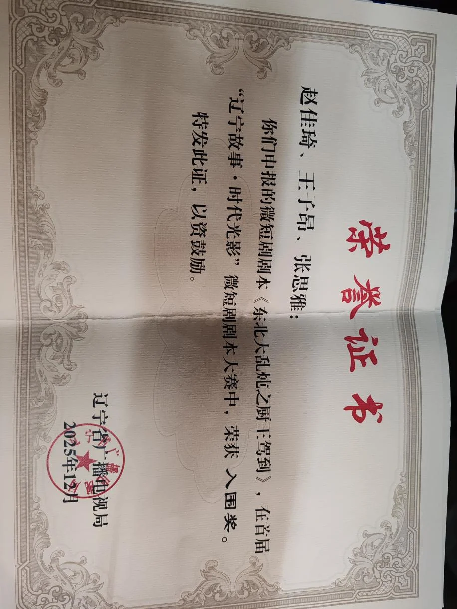

《东北大乱炖之厨王嫁到》
类型：美食、创业、轻喜剧、都市情感
1.故事梗概
辽菜老店“辽味斋”的主厨王大山骤逝，留下传承危机：一边是一心改行开洗脚城的大儿子王满汉，另一边是自幼偷学技艺、实力超凡的女儿王全喜。最终女儿王全喜在厨艺比拼中险胜，打破传男不传女祖训执掌门店。她心疼后厨叔伯年纪较大，重组后厨，广纳街坊能人：卖老式蛋糕的周姐、磨刀师傅周快手、烹饪学专业本科学生陈晨,让老店焕发新生。正当生意蒸蒸日上时，王满汉在对面开设高端西餐厅，由帅哥主厨徐自美坐镇，并通过价格战与舆论攻击使“辽味斋”陷入绝境。为挽救危局，王全喜毅然参加厨王争霸赛，与劲敌徐自美在交锋中相知相惜。决赛中，她以一道东北大乱炖征服评委，夺魁破局。这场胜利不仅让百年老字号重振声威，更让两位厨师在美食理念的碰撞中缔结深情。
创作阐述
《东北大乱炖之厨王嫁到》通过对辽菜老店“辽味斋”的传承危机与复兴之路，深刻探讨了辽菜传统与现代的融合。故事核心在于打破“传男不传女”的陈旧祖训，强调真正的传承不依赖于性别或血缘，而在于个人的热爱、天赋与责任担当。女主角王全喜不仅坚守父亲传授的辽菜精髓，更以开放的心态重组团队，广纳街头能人。其最终以一道最质朴的“东北大乱炖”赢得厨王争霸赛，深刻揭示了美食的本源在于真诚与包容，传递出创新不离根、融合不忘本的文化自信。本剧进一步通过人物命运与冲突，弘扬了以真诚对抗功利、用人情味温暖商业逻辑的价值观。王全喜与徐自美从对手到伙伴的转变，象征着中西美食文化从碰撞走向互补共生的可能。而周姨、剪刀刘等市井平凡人物的闪光故事，赋予老字号深厚的温情底蕴。与之相对，王满汉的失败则警示了背离初心与诚信的功利主义终将崩塌。最终，故事落脚于对坚守本真、包容创新以及团队力量的礼赞，展现出兼具时代气息与传统温度的精神内核。
获奖证书

人物小传
王全喜（23 岁 女）
她身形挺拔，扎着利落的马尾，一双眼睛清澈有神，因常年待在厨房，皮肤不像同龄女孩那般娇嫩，但透着健康的红润。手指纤细却有力，掌心有常年握刀、颠勺留下的薄茧。她穿着朴素。外表看似文静，内心却蕴藏着巨大的韧性和主见、聪慧且极具烹饪天赋，在父亲的教导下，不仅掌握了传统辽菜的精髓，更懂得在细节处融入自己的思考与关怀（如为年长评委调整海参火候）。做事沉稳，有魄力，敢于打破常规，并且拥有卓越的识人眼光和领导才能。同时她内心柔软，体恤长辈，富有同情心。
王全喜是“辽味斋 ”灵魂人物王大山的女儿，在灶台边长大。童年的记忆充满了油烟香气和父亲忙碌的背影。她比哥哥王满汉更早展现出对烹饪的兴趣与天赋，却因祖训而被排除在正式传承之外。这并未熄灭她的热情，反而促使她更用心地观察、偷偷学习。父亲的突然倒下，让家庭和餐馆陷入危机，也激起了她内心最深处的责任感。在厨艺比试中，她以一道近乎完美的葱烧海参证明了自己，不仅是技艺，更是那份对食物和食客的用心。接管“辽味斋 ”后，她面临的不仅是经营压力，更有来自哥哥的恶意竞争。但她凭借过人的胆识，不拘一格地招募了各路奇才，用真诚和共同的信念将团队拧成一股绳。最终，在厨王争霸赛上，她选择用一道东北大乱炖回归美食的本源与真诚，这不仅赢得了比赛，更赢得了对手的尊重和爱情。她证明了，真正的传承不在于性别，而在于心中那份不变的热爱与真诚。
徐自美（26 岁 男）
他身高腿长，面容俊朗、注重仪表，即使在厨房，厨师服总是保持挺括洁净。手指修长干净。做事理性、严谨，追求极致。他自信，甚至有些自负于自己的技艺和理念，最初认为中餐，尤其是传统辽菜，过于依赖经验，缺乏系统性与创新。但他本质纯粹，对烹饪怀有崇高的理想主义，渴望将中华美食推向世界，这也是他被王满汉欺骗的原因。他尊重真正的实力，在与王全喜的多次交锋中，逐渐被其扎实的功底和对食物本真的理解所折服，内心的高傲逐渐化为欣赏与爱慕。
徐自美拥有耀眼的履历：名校烹饪专业毕业，拥有海外米其林餐厅工作经验。他怀揣着重振辽菜雄风的梦想回国，却苦于没有合适的平台。王满汉为他描绘的用西餐厅吸引外国人，进而推广辽菜 的蓝图，恰好击中了他的理想，使他忽略了背后的商业陷阱。在决赛前，王全喜那道东北大乱炖所阐述的理念，彻底打动了他。他意识到，自己追求的融合若失去了文化的根脉，便是无源之水。最终，他选择了在巅峰对决中主动退赛，这不仅是对王全喜的成全，更是对自己初心的回归。之后，他放下身段，加入“辽味斋 ”的辽菜研发部门，与王全喜一起，开始了真正意义上的中西方美食融合探索，也收获了志同道合的爱情。
王满汉（28 岁 男）
身材微胖，穿着讲究名牌，喜欢戴一块醒目的金表，头发总是用发胶打理得油光锃亮。眼神飘忽，与人交谈时习惯性地算计，笑起来带着一丝市侩和虚伪。因为疏于锻炼且饮食不节，已有微微凸起的肚腩。王满汉是一个典型的功利主义者，好逸恶劳，眼高手低。他自私，在父亲病倒后首先想到的是如何将家族资产变现，而非承担责任。他嫉妒妹妹的才能和获得的认可，心胸狭隘，为达目的不择手段，不惜利用卧底、恶性竞争、收买评委等卑劣手法。他巧舌如簧，善于画大饼和欺骗，缺乏真正的商业头脑和长远眼光。
作为王家长子，王满汉从小在“辽味斋 ”金字招牌的庇荫下长大，却未曾真正理解其价值。他目睹了父亲的辛劳，并将其等同于落伍与低效。他向往的是快节奏、高回报的行业，故而一心想着将老店改成洗脚城。在厨艺比试中败给妹妹，他并未反思自身，反而觉得是长辈们偏心，从此怀恨在心。他用分得的遗产开设法兰堡，并非出于对餐饮的热爱，纯粹是为了打击妹妹和证明自己。最终，他异想天开地将洗脚城与餐厅强行结合，落得众叛亲离、一无所有的下场。王满汉是一个被浮躁时代和自身欲望吞噬的悲剧角色，他的故事警示着，背离了初心与诚信，任何事业都如同沙上筑塔。
孙大胖（35岁 男）
人如其名，体型肥硕，满面油光，笑起来像尊弥勒佛，很容易让人放下戒心。一双小眼睛看似憨厚，实则时常闪过精明的光。他动作看起来有些迟缓，但一旦进入厨房，操持起锅碗瓢盆，却又透着一股老练。孙大胖为人圆滑世故，见风使舵。他是餐饮行业的老油条，厨艺过关但谈不上出色，深谙人情世故，有一张能说会道的嘴。他看重利益，缺乏忠诚度，谁给的好处多就为谁办事。被王满汉收买后，他扮演着忠厚老实的员工角色，潜伏在王全喜团队中，伺机搞破坏。他的行为给“辽味斋”带来了巨大的信任危机，是故事中一个关键的负面推动力。
周姨（42岁 女）
身材瘦削，眼神却异常坚毅和温暖。她穿着朴素，但做出的点心却无比精致，总是系着一条洗得发白的围裙，整个人给人一种干净、利落的感觉。周姨坚韧、善良、吃苦耐劳。她是一位伟大的母亲，为了给儿子筹集医药费，不辞辛劳地推着小车沿街叫卖点心。她沉默寡言，但内心明亮，懂得感恩。王全喜的知遇之恩，她铭记于心，并以百分之二百的精力回报。她在面点制作上有着深厚的功底，尤其是油香酥，承载着许多人童年的记忆，她的手艺是辽味斋留住老顾客、增添温情味道的重要一环。周姨口头禅：谢谢，真的太谢谢了。
快手刘（38 岁 男）
精干瘦削，皮肤黝黑，手臂肌肉线条分明，显得异常有力，眼神专注。快手刘话不多，存在感不强，但一旦开始工作，那麻利的身影和富有节奏的刀工声会让你无法忽视。他有着江湖手艺人特有的固执和骄傲，对自己的手艺极为自信。他力气极大，处理食材举重若轻。他不善言辞，表达感谢和认可的方式就是更加卖力地工作。他是团队中的实干派和技术骨干。
他常年游走于市井之间，靠着一副挑子和一双巧手谋生。王全喜被他在磨刀后切白菜展示的利落刀工和潜质所震撼，当场发出邀请。这份赏识打动了他。加入辽味斋 后，他主要负责切配，是后厨高效运转的基石。任何食材到了他手里，都能被处理得恰到好处，他用行动诠释着“行行出状元 ”的道理。
陈晨（22 岁 男）
外貌特征：戴着黑框眼镜，模样清秀，一脸书卷气，看起来更像一个理工科学生。他穿着整洁，即使在厨房，也保持着良好的卫生习惯，操作台面总是收拾得井井有条。陈晨是新时代烹饪教育体系下培养出的专业人才，拥有系统化的烹饪理论和营养学知识。他性格有些内向，不擅言辞，但做事条理清晰，执行力强。他在热菜岗位上的稳定发挥，证明了学院派同样能在传统餐饮领域找到自己的价值，他是“辽味斋 ”走向更加专业化、规范化管理的重要力量。
王天一、王天二（24 岁，双胞胎 男）
兄弟二人长相酷似，都是虎头虎脑，充满朝气。区别可能在于发型或细微的表情。他们精力旺盛，动作麻利，在厨房里像两个永不停歇的小马达。二人活泼、乐观、勤快，说话办事总是一唱一和，默契十足，是团队里的开心果，像现实版的熊大熊二。他们虽然是后厨学徒，但对烹饪充满热情，脑子活络，善于观察和学习。
小朵（20岁）
青春靓丽，笑容甜美，充满亲和力。她打扮时尚，做事聪明、机灵、有想法。作为一名在校大学生，她思维活跃，接受新事物快。为了赚学费而出来做兼职，她比同龄人更多了一份懂事和责任感。她不仅是优秀的服务员，更是辽味斋的线上推广人，她用心运营下，帮助老店成功打响了开业第一炮，吸引了年轻客群。从线上平台的搭建、内容创作到引流推广，她都做得有声有色，小朵代表了新一代消费者和从业者，她的加入，象征着“辽味斋 ”不仅在菜品上，更在经营理念上实现了老店新生。
故事大纲
第一部分（起）：传承危机、由心出发
东北老城，历经三代的辽菜馆“辽味斋”是当地的一块金字招牌。老板兼主厨王大山凭借一手祖传的辽菜手艺，将小店经营得有声有色。然而，一场突如其来的脑出血，让这位顶梁柱轰然倒塌，整个“辽味斋”乃至王家都陷入了巨大的悲痛与迷茫之中。
王大山有两个孩子：大儿子王满汉好吃懒做，眼高手低，对传统厨艺毫无兴趣，一心认为餐饮业辛苦且回报慢，早已盘算着将“辽味斋”这块地皮改成洗脚城。小女儿王全喜虽因“传男不传女”的祖训未被正式收徒，但她从小在厨房耳濡目染，极具天赋，凭着对烹饪的热爱和孝心，常偷偷向父亲请教，王大山也心照不宣地倾囊相授。她内心深爱着这个家与“辽味斋”，视其为生命的一部分。王家确有“传男不传女”的祖训，但王满汉的极度不靠谱让店内老师傅和王家长辈们忧心忡忡。在母亲和几位老员工的坚持下，决定通过一场公开的厨艺比试来决定“辽味斋 ”的未来。比试当日，王满汉敷衍了事，妄图投机取巧，做了一道华而不实的创新菜。而王全喜则沉稳应战，端出了一道父亲王大山赖以成名的传统名菜“葱烧海参 ”。她不仅完美复刻了父亲的技艺，火候、调味分毫不差，更在摆盘上融入了一丝独创的细腻——考虑到各位评委的叔叔伯伯岁数大了将海参的火候又加大几分，入口即化。高下立判，王全喜以绝对优势胜出，正式接管“辽味斋 ”。
第二部分（承） ： 巾帼当家，老店新生
接管“辽味斋 ”后，王全喜遇到第一个难关就是人员问题。后厨的叔叔伯伯年龄大了、身体也各有问题，她体恤后厨年迈的叔伯们，决定让大家退休，享享清福，后厨她要重新组队。
后厨的王天一和王天二两兄弟是后厨的学徒，中午午饭的时候，用厨房剩下的边角料拌了一道“老虎菜 ”，全喜吃到后觉得口味惊为天人，主动邀请做辽味斋的凉菜主管，兄弟在收到邀约后向全喜表忠心决心留下把辽味斋做大做强。两兄弟说话一唱一和很有趣，像现实版的熊大熊二。
王全喜决定停业整顿五天，不拘一格，亲自寻访民间高手。
王全喜回到家之后在网上发了征募启示，在小红书看到一篇推荐帖，有一家私房菜饭店，有一位帅哥神厨“徐自美 ”主厨很神秘，神出鬼没，但做得一手的好菜，菜品和他的样貌一样，秀色可餐。王全喜想邀请他来辽味斋坐副厨。
顺着小红书的地址找到后发现徐自美主厨不在下山去采购去了，要下午才回来，又累又饿的王全喜购买了一家路边小推车周姨卖的老式蜂蜜小蛋糕，蛋糕松脆可口，王全喜把小板车的各色糕点买了个遍，在尝到老味糕带油香酥的时候，久违的童年的味道让王全喜惊异不已，了解知道卖点心的周姐靠摆摊赚钱给儿子治病，王全喜细聊之后邀请周姐做辽味斋的面点主管。
回程的路上，王全喜走进一家面店，与徐自美初遇。店主是一位耄耋老人，王全喜和徐自美不约而同的点了同样的大肉面，二人和老板聊天，老板要他们讲讲面里面的调料有哪些，二人一来一回争相抢答，只剩下最后一味，老板说叫心味，并告诉两位年轻人日后会懂。
第二天一早，王全喜被磨剪子的吆喝吵醒，到楼下看周快手磨刀之后的切白菜试验，发现周快手拥有切墩的潜质，做事麻利，动作利索，力气极大，王全喜当即邀请周快手加入辽味斋。
王全喜收到了来自一位本科专业烹饪与营养教育专业的大四毕业生陈晨的资料投递，王全喜这才了解到现在高校针对这个专业的教育已经可以达到系统化，专业化，王全喜被陈晨清澈淳朴的气质和有条不紊的操作打动，决定安排他做热菜师傅。
与此同时，大哥王满汉派人追踪妹妹的动向得到反馈，他开始使绊子，下一盘大棋。他派出了自己的手下几经验老到的孙大胖作为卧底潜入王全喜的队伍，又派重金邀请徐自美，提出满足他想重振辽菜雄风的愿望给他专门打造一家酒楼。
第四天经验老道的孙大胖凭借过关的厨艺和三寸不烂之舌加入辽味斋，埋下一个大的隐患。与此同时，王全喜收留了想要做兼职赚钱养母的大学生小朵来做服务员。这支看似“杂牌 ”的队伍，在王全喜的凝聚下，焕发出惊人的活力。
刚开门，小朵想到可以打通线上的平台，进行投流推广，老品牌也要和新平台相结合。在小朵用心的运营下他们成功攻克了开业第一炮— —承办一场重要家宴，凭借地道的口味和用心的服务赢得了满堂彩。随后，王全喜与团队精心挑选并打磨了新的主厨招牌菜挂出日日鲜的招牌，既保留了传统精髓，又略有创新。老店名声迅速回升，成为当地家喻户晓的辽菜新地标。
第三部分（转） ：暗流涌动，危机降临
大哥王满汉争夺主厨失败，心有不甘。他利用分得的遗产，在“辽味斋”正对面开了一家装修豪华、定位高端的西餐厅“法兰堡”。为了一举击垮妹妹，他不惜重金聘请了拥有高颜值、高学历的明星主厨徐自美。并给徐自美画饼为了将辽菜做大做强才开了一家西餐厅，这样才能让更多外国人了解到我们辽菜的魅力，王满汉满嘴跑火车哄骗徐自美签下不平等的合同。徐自美刚开始真的以为自己的梦想即将实现，干劲满满。
“法兰堡”一经开业，凭借其时尚的环境、新颖的菜式和徐自美的个人魅力，迅速吸引了大量年轻消费者，门庭若市。王满汉更采取恶性价格战，推出低价套餐，直接抢走了“辽味斋 ”近半的客源。
与此同时，“辽味斋”内部危机爆发。有顾客声称在菜中吃出了异物，并被恶意拍下视频在网上传播，导致“辽味斋 ”声誉蒙受巨大冤屈，生意一落千丈。王全喜经过暗中调查，震惊地发现这一切竟是孙大胖被王满汉收买所为。虽然清除了内鬼，但造成的负面影响已难以挽回。 “辽味斋”陷入艰难的境地。
王全喜伪装成客人来到法兰堡后发现主厨是当时偶遇帅哥惊异不已。
王满汉在吃到甜头之后，决心实现他的终极计划把洗脚城和饭店相结合，为了捧出这个项目，他要求徐自美参加一年一度的沈城的厨王争霸赛。
第四部分（合）：绝地反击，爱与传承
面对内外交困的绝境，王全喜意识到，只有在一个绝对公正、公开的舞台上正面击败对手，才能挽救“辽味斋”。她决定参加一年一度、备受瞩目的沈城厨王争霸赛。
令王全喜出乎意料的是，比赛中，徐自美作为“法兰堡”的代表，同样是夺冠大热门，王全喜怒从中来。二人在赛场上多次交锋，王全喜对传统辽菜深刻的理解和扎实的基本功，与徐自美精准、科学、富有艺术感的西餐技法形成了鲜明对比。在一次次专业碰撞中，两位顶尖厨师抛开立场，产生了发自内心的欣赏与敬佩，一种惺惺相惜、相逢恨晚的感情悄然滋生。徐自美也逐渐了解到王满汉商业手段的不堪，内心对王全喜更多了一份同情与敬意。
最后的决赛意料之中是王全喜对战徐自美，二人在比赛前一晚来到一条热气腾腾的小吃街，吃着各色小吃，放下之前的恩怨，也把二人之间的矛盾解开，二人达成共识，明天要公平公正来场比试。
决赛主题为辽菜的融合与本源。在所有评委和观众期待一道华丽大菜时，王全喜却端上了一道最质朴的 “东北大乱炖” 。她阐述道：“这道菜，看似杂乱，实则包容。它将最寻常的食材，在时间里相互交融，最终成就了独一无二的温暖滋味。这不仅是东北人的生活智慧，也是‘辽味斋三代坚守的哲学——用最真的心，做最暖的菜，传承的不是某一道秘方，而是这份对待食物和人的真诚。 ” 这番话语深深打动了评委。但王满汉在比赛前就已经买通了评委，最后在即将宣布结果的时候，徐自美主动退赛，王全喜拿到胜利，全喜觉得这样不公平而徐自美告诉全喜：尝了这道菜之后，如果我不退赛，才是真的不公平，因为这场比赛输赢早已注定。
最终，王全喜凭借这道回归本源的“东北大乱炖”赢得了厨王争霸赛的冠军。“辽味斋”名声大噪，誉满全国，生意比以前更加红火。比赛结束后，徐自美辞去了“法兰堡 ”的工作，他找到王全喜，坦言自己被她的技艺与精神所折服。他不再视自己为征服者，而是希望成为探索者，与王全喜一起，探讨中西方美食融合的更多可能。两人在共同守护与创新美食的理念中，最终走到了一起。
王满汉的“法兰堡”因强行将洗脚和吃饭放在一块，最后搞得一塌糊涂，王满汉最后一无所有。新的“辽味斋”成立了研发部门，由王全喜和徐自美共同主导，传统辽菜与创新菜式相得益彰。
完整剧本
【第一集】
场景一 辽味斋店门口 日 外
正午，辽味斋的招牌在阳光的映射下显得光彩熠熠，烫金的草书字体显得格外恢弘大气。
门 口的车子整齐地排列两排没有一处空位，准备用餐的客人络绎不绝 , 饱餐离开的客人个个脸上都带着餍足的满意表情。
一个少女装扮的女孩（王全喜）背影出现在画面正中央，她带领着画面进入店内。女孩扎着两个粗粗的马尾辫，走起路来一晃一晃。走进店内，前厅座无虚席，食客们边吃边聊，桌上的锅包肉金黄酥脆，熘肉段外焦里嫩，每一道菜都飘着地道的辽菜香气。
走到收账的位置的时候，老板娘热切的向王全喜招招手。
老板娘
老闺女，今天不是说给你放假嘛？
少女（王全喜）
闲不住！就想来帮忙啦！
老板娘听到女儿的话，敲了敲身旁正在打游戏的王满汉的脑袋。
老板娘
你看看你妹妹！
王满汉
(不屑)
切~一个女的总往后厨跑能有什么
用？
场景二 日 内 辽味斋后厨
女孩七拐八拐走进后厨，后厨里热气蒸腾，铁锅与灶台碰撞的叮当声、食材入油的滋啦声交织成热闹的交响。女孩进门的时候顺手系上围 裙。
王天一＋王天二
(齐声说)
全喜姐好！
女孩走到主厨王大山身边观察，主厨王大山系着洗得发白的蓝布围裙 , 双手颠着一口沉甸甸的铁锅，锅里的葱烧海参在火苗的包裹下翻滚
, 酱汁浓稠地裹住每一块海参。
女孩露出正脸，一张清秀白净的脸蛋，有模有样的告诉父亲。
王全喜
王大厨，今天的溜肉段火候有点儿大
呀！
王满汉
你这小丫头，眼神挺毒，新换的煤气
罐，火硬！
王全喜
你歇会，我来试试？
王满汉满意的点点头，坐在王全喜身后的椅子上，端起茶杯浅浅的喝了一口。
王全喜目光坚定，手起刀落，肉段应刀而断成整齐的骰子块。起锅烧油，一气呵成，王全喜突然回头看向父亲。
王全喜
爸，你说我做的对嘛？
王大山
(看了女儿一眼，眼角的皱
纹里藏笑意)
按你记的来就行。你那手艺，早不比
我差了。
王全喜
那你来帮我试菜。
王大山
好呀！
王全喜
(一边碎碎念一边盛菜)
爸你知道吗，我自己练了好久，我也
感觉自己好像明白一点你说的用心，
是什么感觉了！
王全喜将溜肉段盛入盘中，正准备回头的时候，后面发出重重的倒地的声音。
王大山脑出血摔下椅子晕倒。
王全喜
爸！
王全喜手中的盘子摔在地上，王全喜冲向父亲王大山。
【第二集】
场景一 葬礼礼堂 日 内
葬礼礼堂里一片肃穆。正前方的墙上挂着王大山的黑白遗照，照片里的他穿着整齐的中山装，笑容慈祥。
遗照前摆着花圈，白色的挽联上写着 “一生厨艺传佳话，半世辛劳留美名”。
王全喜跪在蒲团上，一身黑衣，头发用黑绳简单束在脑后，双眼红肿得像核桃。
母亲李桂兰坐在旁边的椅子上，手里拿着手帕，不停地擦着眼泪，肩膀微微颤抖。
王满汉却穿着一身崭新的黑色西装，头发梳得油亮，手里拿着手机，时不时低头看一眼。
王满汉看着周遭悲悲戚戚的氛围不屑的撇撇嘴，佯装痛哭扑倒在遗照面前。
王满汉
(猫哭耗子)
爸啊！你怎么就走了呢？！ 咱们家这
么大的基业谁来接手，谁来照顾妈，
照顾妹妹！爸啊！我王满汉一定不枉
费你的养育之恩，把咱们家生意做大
做强，我给您多烧纸，多邮钱，您老
保佑咱家呀。
王满汉你少在这儿猫哭耗子，爸活着的时候，你去后厨帮过他一次吗？我倒要问问你你想怎么做大做强。
周叔
是啊满汉，你要干嘛呀？
王满汉
咳咳，经过我周密的计划，和多年来对我爸头脑的继承，我准备把辽味斋拆了重建。
王全喜什么？
王满汉
哼，就开一家洗脚＋餐饮复合型娱乐城，二到四楼洗脚，一楼吃饭。两家的钱咱们一家赚，这可比天天在厨房里累死累活强多了
王全喜
你说什么浑话！这辽味斋是爸一辈子的心血，是王家三代人的传承，你怎么能说改就改？
周围叔叔伯伯们脸色铁青，听见王满汉的想法都叹气。
王满汉倒是越说越兴奋。
旁边的几位后厨老师傅也围了过来。张师傅是跟着王大山干了二十年的老厨师，头发已经全白了，他指着王满汉说。
张师傅
满汉，你从小就不爱进厨房，连菜刀都拿不稳，现在想把店改成洗脚城，
你对得起你爸吗？
李师傅
辽味斋在咱们这一片可是金字招牌，多少老主顾就认这个味儿，你不能糟
践了它！
孙师傅
话也不能这么讲，毕竟满汉是王师傅的亲儿子，而且店里的规矩谁也不能打破呀，要不成什么了？
王满汉被说得脸一阵红一阵白，他梗着脖子，指着王全喜说。
王满汉
没错！王家祖训传辽味斋传男不传女！我是长子，这店本来就该归我！她一个丫头片子，凭什么插手店里的事？
众人面面相觑。
【第三集】
场景一 葬礼礼堂 日 内
王全喜抬起头，通红的眼睛里满是愤怒。
王全喜
祖训是传能守住手艺、能撑起家业的人，不是传你这种好吃懒做、只想投机取巧的人！
王满汉你看我怎么收拾你。
王满汉撸起袖子准备动手。
王满汉上前一步，想要推王全喜，却被张师傅拦住了。
张师傅满汉，你别太过分！
礼堂里的气氛瞬间变得紧张，亲友们都围了过来，议论纷纷。这时，王家族长王爷爷拄着拐杖走了过来，他是王大山的叔叔，在家族里威望很高。
王爷爷
都别吵了！
王全喜
二爷！
李师傅
王师傅，您老人家怎么折腾来了！
王爷爷看了看王满汉，又看了看王全喜，缓缓说道。
王爷爷
王家确实有传男不传女的祖训，但祖训也得变通。大山这孩子，一辈子就想把辽味斋传下去，可满汉你呢，对做菜一窍不通，一心只想赚钱；全喜虽然是女儿，但她从小在厨房长大，手艺好，也有心守住这店。
王满汉
我不服，凭什么这么多年的规矩到我
这儿就坏了，我不管你们要是不让我
掌店，那就谁都别想好！
王爷爷长长的叹了口气。
王爷爷
你给我住嘴！
王满汉被吓住。
王爷爷
这样，三天后，在辽味斋办一场公开的厨艺比试，谁赢了，谁就接管辽味斋。这样既公平，也对得起大山的在
天之灵。
众人都点头同意。
王全喜
我没问题，我相信自己的手艺。
王满汉犹豫了一下，他知道自己厨艺不行，但转念一想，说不定能找个高手帮忙，赢了就能把店改成洗脚城。他咬了咬牙
王满汉
(os)
比就比，我还怕她不成？
王爷爷
满汉，做菜靠的是真本事，不是耍小聪明。你好 自为之。 ”
王爷爷说完，他拄着拐杖，转身离开了礼堂。
王满汉
哼！
王全喜看着父亲的遗照，在心里默默说
王全喜
爸，我一定会赢，一定会守住辽味斋，不让您的心血白费。
【第四集】
场景一 洗脚城 日 内
王满汉整个人陷进沙发里，一个年轻的男孩在给王满汉按脚，王满汉面前放着一杯红酒。他拿着手机，拨通了一个电话。
王满汉
喂，强子，是我。我跟你说个事，我
三天后要跟我妹妹比厨艺，你帮我找
个大厨，随便教我一道能唬人的菜。
电话那头传来一个粗犷的声音。
强子
拉倒吧，你跟你妹妹比厨艺？你妹拿
脚炒的都比你好。
王满汉
去你妹的。你赶紧帮我找，三天后就
要用。
强子
那这个费用——
王满汉
你放心——只要能赢，这点钱算什么。等我把辽味斋改成洗脚城，以后有的
是钱赚。
挂了电话，王满汉端起冰咖啡喝了一 口，嘴角勾起一抹得意的笑容。
他拿出手机，翻出辽味斋的照片，心里盘算着。
王满汉得意的把一大钞票拍在按脚的男孩面前。
服务员（男）
(矫揉造作)
老板我卖艺不卖身。
王满汉
有骨气，我就欣赏有骨气的!等我把店接过来，我第一个挖你过去！
服务员谄媚的更用力了。
场景二 辽味斋后厨 日 内
王全喜系着父亲的旧围裙，站在灶台前，手里拿着父亲的菜谱，认真地操作着。
王全喜
(内心os)
这道葱烧海参是爸爸最擅长的一道
菜，要做好它，诀窍这准备工作。
王全喜洗净泡发海参的海口碗，倒入纯净水。
王全喜
(内心os)
做葱烧海参，泡发海参是关键。用纯
净水，泡三天三夜，每天换三次水，
这样泡出来的海参才够劲道。而且泡
发的时候，不能沾一点油，不然海参
容易烂。
王全喜
(内心os)
爸爸，你放心，我是绝对不会眼看着
咱们家的辽味斋败光在王满汉手里
的。
场景四 厨房 夜 内
王满汉的屋里，乱七八糟地堆着衣服和杂物。他坐在沙发上，远程有一位夹杂着中西口音的大厨指导他做菜。
外国厨师
Mr 王，起锅，等锅热后——倒入a little 的油，然后——
王满汉
等一下，这个起锅是怎么起的？
外国厨师
joking？！王先生您真的是在烹饪方
面一塌糊涂，一片狼藉、一笔购销，
一泻千里！
王满汉
TWO hundred dollars！
外国厨师
当然也不是一无是处，中国讲究色香味俱全，至少色还可以短期速成，我们就做一道创意海鲜拼盘，把别人的东西拼在一块就成了你自己的东西。
王满汉嗯，这个听着靠谱！
王满汉开始照着厨师的描述的开始做。
与此同时，王全喜也在紧锣密鼓的准备着。
屏幕出现，三天后。
场景四 后厨 日 内
后厨之前的叔叔伯伯还有王爷爷都作为评委坐在一边。
兄妹二人面对面，正对着的灶台开始操作，二人之间火药味很浓。
王满汉
我劝你现在放弃还不算丢人，一个女人往后厨扎堆，要不要脸。
王全喜哼。
王满汉你笑什么？！
王全喜
我笑你大脑发育不完全，小脑完全不发育，我看你脑子确实是进水了，进的还是洗脚水要不然也不会满脑子想着开什么洗脚城。
王满汉被全喜犀利的话刺激到，脸涨得通红。
李师傅挡住剑拔弩张的二人，宣布比赛正式开始。
李师傅
我宣布，比赛正式开始！
【第五集】
场景一 辽味斋操作区 日 内
王满汉打开箱子，里面装满了各种名贵海鲜和水果。
他拿出手机，打开视频，开始按照视频里的步骤准备食材。两个跟班在旁边给他打下手，递工具、洗食材，忙得不亦乐乎。
王全喜则从食材袋里拿出泡发好的海参、葱、姜、蒜等调料，放在灶台上。她没有急着动手，而是先仔细清洗了灶台和工具，然后才开始处理食材。她的动作熟练而沉稳，每一个步骤都做得有条不紊。
孙师傅
你们看——满汉说准备制作的是创新海鲜拼盘，食材丰富，看起来还挺有创意的，咱们这些老骨头也应该接受
接受新菜品。
李师傅
全喜准备制作的是传统辽菜葱烧海
参，这是大山的拿手绝活，不知道她能不能做出当年的味道。
比试开始已经半个小时了，操作区里的气氛越来越紧张。
王满汉站在灶台前，手里拿着手机，时不时低头看一眼视频，然后笨拙地处理着食材。他准备制作的创新海鲜拼盘，需要处理龙虾、螃蟹、虾等多种海鲜，步骤繁琐。
(用力剪着龙虾壳)
这龙虾的壳怎么这么硬啊！
旁边的跟班赶紧递给他一把钳子。
跟班
老板，用这个试试。
王满汉接过钳子，费了九牛二虎之力，才把龙虾壳剪开。他把龙虾肉取出来，放在盘子里，却不小心把龙虾肉弄碎了。
王满汉
(冲跟班1)
废物！
他又拿起一只螃蟹，开始处理。处理螃蟹的时候，他又遇到了麻烦。螃蟹的钳子夹得很紧，他不敢用手直接碰，只能用筷子慢慢撬开。结果不小心被螃蟹夹到了筷子，他用力一甩，螃蟹掉在地上。
王满汉
(气得把筷子扔在地上，冲
跟班2)
笨蛋！
旁边的跟班赶紧帮他把螃蟹捡起来，重新处理。
台下的观众看到这一幕，都忍不住笑了起来。
街坊甲
你看满汉那笨样。
街坊乙
我看他就是瞎折腾，根本不会做菜。
另一边，王全喜已经开始炒糖色了。她小火慢炒冰糖，眼神专注地看着锅里的冰糖，时不时用锅铲轻轻搅动。冰糖慢慢融化，变成浅褐色，散发出淡淡的焦香。她加入老抽、生抽、料酒、蚝油等调料，翻炒均匀，酱汁的香气瞬间弥漫了整个前厅。
街坊丙（忍不住赞叹）
好香啊！这酱汁的味道，跟王大山当年做的葱烧海参一模一样。
评委席上的张师傅点点头，对旁边的李师傅说。
张师傅
全喜这丫头，把她爸的诀窍都学到了。
王全喜把调好的酱汁盛出来，放在一边，然后开始处理海参。她把泡发好的海参拿出来，用剪刀小心翼翼地剪开腹部，去掉内脏，然后用清水冲洗干净。处理好海参后，她把海参放进锅里，加入适量的清水，大火烧开，然后转小火煮了五分钟，去除海参的腥味。
李师傅
处理海参的时候，一定要先焯水，这样才能去除腥味，让海参的口感更好。
王全喜全神贯注的时候，另一边大呼小叫的王满汉卸下来的螃蟹钳飞到开水锅，溅起的水花蹦到了王全喜，全喜惊呼一声，瞬间手被烫红。
【第六集】
场景一 辽味斋操作区 日 内
王全喜忍着疼痛，果断用纱布包起来，重新起锅烫海参。
王满汉一脸的得意，一边处理一边哼起小曲。
时间一分一秒地过去，距离比试结束还有十五分钟。
王全喜已经把海参放进调好的酱汁里，中火慢炖。她打开锅盖，海参色泽红亮，裹着浓稠的酱汁，看起来就很有食欲。
王满汉还在忙着摆盘。他把处理好的海鲜放在盘子里，胡乱地摆了起来，又放上一些水果和巧克力酱作为装饰。
王满汉
巧克力，爱吃放进去——大虾，爱吃，放进去——菠萝爱吃，放进去——这
么多又贵又高端的食材放一块我就不
信他难吃。
王全喜开始装盘了。她把炖好的葱烧海参盛进一个白色的瓷盘里，然后用葱丝和红椒丝做了简单的装饰，看起来简洁而大方。
倒计时的滴滴声响起来，王满汉率先举手，并对全喜投向鄙夷的目光，全喜淡定的点点头，沉稳的说到。
王全喜
好了，我的菜做好了。
王满汉的创新海鲜拼盘摆在左边，盘子里装满了龙虾、螃蟹、虾、生蚝等海鲜，旁边还放着草莓、蓝莓、巧克力酱等装饰。虽然食材丰富，但摆盘杂乱，海鲜的颜色也不太新鲜，看起来没有一点食欲。
王满汉
(走到评委席前，脸上带着
得意的笑容)
各位评委，这是我的创新海鲜拼盘。
我选用了最新鲜的海鲜，搭配了水果
和巧克力酱，中西结合，不仅好看，
而且好吃。这道菜代表了我的创新理
念，我觉得辽菜也应该与时俱进，不
断创新，才能吸引更多的年轻消费者。
评委们面无表情地看着盘子里的海鲜拼盘，没有人动筷子。张师傅拿起筷子，夹了一块龙虾肉尝了尝，眉头紧锁。
张师傅
这龙虾肉怎么这么老？像鞋垫一样嚼
不动。
李师傅
(也夹了一块螃蟹尝了尝。)
螃蟹也没煮熟，里面还有血丝。而且
这巧克力酱跟海鲜搭配在一起，味道
太奇怪了。
王满汉
你们有没有品味，孙师傅你尝尝，
孙师傅吃了一口赶紧吐了出来。
孙师傅
水！水！辣！
王满汉
哦，你吃到了我的彩蛋！魔鬼辣椒—
其他评委也纷纷尝了尝，都摇了摇头，对王满汉失望透顶。
王全喜
各位评委，这是我做的葱烧海参，沿用了我父亲王大山的配方。请各位师傅们指点。
众人吃了之后纷纷点头肯定，只有李师傅突然顿住了。
李师傅这海参，不对劲。
李师傅面色突然凝重。
【第七集】
场景一 辽味斋操作区 日 内
众人听到李师傅的话都愣住了，等待下文。
王满汉
我就说嘛，装模左右，这下子露馅了吧，哼！
李师傅
孩子，这海参为什么火打了两成，是没控制好吗？
王全喜不慌不忙的看向大家解释。
我知道各位评委都是我父亲的老伙
计，年纪都不小了，牙口可能不太好，
所以我特意加大了两成火候，让海参
更软糯，入口即化，也更方便吸收，
希望各位评委能喜欢。
李师傅拿起筷子，夹了一块海参尝了尝。海参入口软糯，酱汁浓郁，咸甜适中，一点都不腻。李师傅眼眶有些湿润。
李师傅
孩子，你是真的在用心做菜。
李师傅
这味道，让我想起了当年跟大山一起做菜的日子。那时候，我们经常一起研究葱烧海参的做法，大山总说，这道菜是辽菜的代表，一定要做好。现在，你做到了，大山要是泉下有知，肯定会为你骄傲的。
其他评委也纷纷尝了尝，都赞不绝 口。
王满汉站在一旁，脸色铁青，双手紧紧攥着拳头，心里又气又恨。
王爷爷
诸位，我想，今天的比试，高下立判
了吧。
王满汉
你们偏心！她就是个丫头片子，凭什么赢我？你们肯定早就串通好了！
王爷爷
(沉声道)
满汉，你别太过分！评委们都是公平
公正的，你自己做菜不用心，还想赖
别人，不觉得丢人吗？
王满汉被说得哑口无言，他看着台下观众们鄙夷的目光，又羞又恨，转身朝着门口跑去。
王满汉
这店我可以不要，但是股份我总是有的吧，我今天就要和辽味斋划清关系，把我的那部分钱通通给我。
王爷爷王满汉！你混账。
好！我同意，辽味斋也应该和你这种忘本的人划清界限。从此之后，你与辽味斋再无关系！
王满汉
谁稀罕！你们给我等着，我不会就这么算了的！
王满汉愤然离开。
王全喜
(（内心OS）)
爸，我赢了，我守住辽味斋了，只可惜你吃不到女儿做的菜了。
李师傅
全喜，这后厨就交给你了，我们这群叔叔伯伯一定会尽力帮你的。
李师傅说完后因为胸痛猛烈地咳嗽，王全喜看到很心疼。
王全喜
谢谢各位叔叔伯伯，谢谢各位街坊邻
居，谢谢大家对我的支持和信任。我
向大家保证，我一定会守住辽味斋的
招牌，继承我父亲的手艺，用心做好
每一道菜，让更多人吃到正宗的辽菜，
不让大家失望！
台下再次响起热烈的掌声。阳光透过窗户洒进辽味斋，照亮了王全喜的脸庞，也照亮了辽味斋的未来。
【第八集】
场景一 辽味斋后厨 日 内
晨光透过后厨的排气窗洒进来，落在锃亮的灶台上。
王全喜系着父亲的旧蓝布围裙，正跟着张师傅学习调制辽菜特有的糖醋汁。
张师傅花白的头发被汗水濡湿，贴在额角，手里的勺子刚搅动了几下，就忍不住抬手按住腰侧，眉头拧成一团。
王全喜看到以后立马扶着张师傅坐到旁边的板凳上，顺手递过去一杯温水。
王全喜
张叔，您歇会儿！
张师傅摆摆手，喘着气笑道。
张师傅
老毛病了，腰间盘突出，不碍事。你这糖醋汁调得有模有样，就是醋放得稍多了点，再加点糖中和一下就正好。
王全喜点头记下， 目光却落在后厨忙碌的几位师傅身上。
王全喜
(内心os)
李叔去年刚做了心脏手术，切几下菜
就要换口气，孙师傅的肩周炎越来越
严重了，后厨的叔叔伯伯们真的是操
劳了一辈子，难道现在还要为了我继
续操劳，重蹈覆辙像父亲一样——不
行，决不能这样。
王全喜主观视角李师傅切菜时左手一直按着胸 口，每切几刀就会悄悄换气；孙师傅颠勺时动作明显迟缓，往日利落的翻炒如今显得有些吃力。
场景二 前厅 日 内
午餐高峰过后，后厨终于安静下来。王全喜看着几位师傅互相捶着腰背、揉着肩膀，心里五味杂陈。她端来切好的西瓜，挨个递到师傅们手里。
王全喜
张叔、李叔、孙师傅，辛苦大家了，
吃块瓜解解暑。
李师傅咬了一口西瓜，叹道。
李师傅
想当年跟着你爸干活，连续站一天都不觉得累，现在真是不中用了。 ”
他说着又咳嗽起来，脸色泛起不正常的潮红。
王全喜握着李师傅的手，掌心传来的粗糙触感让她鼻子一酸。
王全喜
李叔，您都跟着我爸干了二十多年，身子早就熬出病根了。
李师傅
我们不打紧的，你刚起手，有好多事都不知道，我们这些老东西还能再帮
帮你。
王全喜心疼得落泪。
场景三 辽味斋后厨 夜 内
送走最后一批客人，王全喜把几位师傅请到前厅坐下，自己则站在他们面前，神情郑重。桌上的台灯照亮她清秀的脸庞，眼神里满是真诚。
王全喜
各位叔叔伯伯，我知道辽味斋能有今天，全靠你们陪着我爸一路打拼。说句夸张的话，带啊看着我长大，和我的家人没差别。这些年，你们在厨房里摸爬滚打，落下了一身毛病，我都看在眼里，疼在心里。
张师傅
(愣了愣，率先说道)
全喜，你想说啥？我们还能干，还能
帮你撑着后厨。
王全喜
我知道大家心疼辽味斋，也心疼我，可我更心疼你们。你们现在应该在家里享清福，再这么硬扛下去，身体迟
早要垮。
孙师傅
可后厨离了我们，你一个人怎么撑得起来？辽菜的手艺讲究传承，外面的厨师未必懂咱们的门道。
王全喜
这一点我已经想好了，我决定让大家都退休，安安心心享清福。店里会给各位叔叔伯伯发足额的退休金，以后每个月我都会带着好酒好菜去看望大家。至于后厨，我要重新组队，招一些年轻有活力、愿意学辽菜的年轻人，我亲自教他们，把我爸的手艺、咱们辽味斋的规矩一代代传下去。
李师傅
(放下手里的茶杯，眼眶泛红)
全喜，你这孩子，心思太细了。可我们走了，你压力就太大了。
王全喜
压力也是动力。我还年轻，想要多做一些尝试，咱们现在确实守住手艺了，
但光靠吃老本是不够的，必须要开展
新的路线，进行新的尝试。
张师傅看着王全喜认真的模样，突然想起了年轻时的王大山，眼眶一热
。
张师傅
好丫头，不愧是大山的女儿！我们听你的，不过你要是招不到合适的人，我们随时回来给你搭把手。
几位师傅纷纷点头，王全喜看着他们布满皱纹却满是欣慰的笑脸，心里的石头终于落了地。
【第九集】
场景一 辽味斋后厨食材库 日 内
停业整顿的第一天，后厨少了往日的喧嚣，只有食材库传来窸窸窣窣的整理声。
王全喜穿着沾了些许面粉的围裙，正蹲在货架前清点干货 —— 玻璃罐里的八角、桂皮码得整整齐齐，真空包装的海参按泡发程度分类摆放，她手里的笔记本记得密密麻麻，时不时伸手捏一捏干香菇的湿度，确认是否受潮。
王天一
全喜姐，这箱东北黑木耳要不要挪到
通风的架子上？
王天一身形壮实，抱着半人高的纸箱，额角沁出细汗，说话带着憨直的底气。
他身后的王天二身形稍矮，却灵活得像只猴子，正踮着脚把干辣椒串挂到房梁挂钩上。
王天二
姐，我看角落里那袋高粱米有点返潮，要不要拿出去晒晒太阳
王全喜抬头笑了笑，手里的笔在笔记本上勾了个勾。
王全喜
天一说得对，木耳怕潮，挪到靠窗户的第二层货架。天二，高粱米先别急着晒，咱们后厨有除湿机，先挪到机器旁边烘半天，直接晒容易裂。
她起身拍了拍裤子上的灰，目光扫过兄弟俩沾了灰尘的袖口，又补充道
。
王全喜
忙完这阵去洗洗手，一会儿到前厅吃
午饭。
兄弟俩齐声应下，干活更卖力了。
两人一唱一和像极了哼着小调的搭档。
场景二 辽味斋前厅 日 内
正午的阳光透过前厅的玻璃窗，落在擦得锃亮的餐桌上。
王全喜刚把保温桶里的米饭盛好，就见王天二端着一个青花瓷盘跑过来 , 盘子里的凉拌菜红黄绿相间，香菜、青椒、黄瓜丝堆得满满当当，还撒了些白芝麻，看着就清爽。
王天二
全喜姐，你快尝尝！这是我和哥用厨房剩下的边角料拌的老虎菜，里面可有我们俩的独门秘籍，你快尝尝。
王天一挠了挠头，站在旁边有点不好意思。
王天一
就是瞎琢磨的，全喜姐别嫌弃。之前看后厨师傅拌凉菜， 自己也记了点门道，今天正好剩了点食材，就试着做
了。
王全喜拿起筷子，夹了一筷子送进嘴里。
王全喜
(内心os)
好清爽的味道，先是青椒的鲜辣直冲味蕾，接着是黄瓜的脆爽和咸黄瓜的醇厚，最后香菜的清香在嘴里散开，辣而不燥，鲜而不腻，口感好丰富，不对——
王全喜眼睛一亮，又夹了一筷子，忍不住赞叹。
王全喜
这味道绝了！咸淡正好，口感也清爽，比我之前吃过的老虎菜还多了点韧
劲，是什么独门秘籍呀？
王天二立刻来了精神，掰着手指头数。
王天二
姐您真厉害！我加了点蒜末和香油，还偷偷放了一点点花椒油提香，最关键是咸黄瓜切得细，跟青椒丝拌在一起，嚼着有劲儿！
王天一
切菜的时候把黄瓜拍碎了，说这样更
入味，青椒也斜着切， 口感更脆。
王全喜又夹了一筷子，心里默默地想。
王全喜
(内心os)
喜欢吃，又喜欢研究吃，最主要的是
人心善，这对活宝倒是非常合适的人
选。
王全喜放下筷子，看着眼前这对活宝兄弟，心里突然冒出一个念头。她清了清嗓子，神情变得郑重。。
王全喜
天一、天二，你们俩愿不愿意留在辽味斋，当咱们后厨的凉菜主管？
兄弟俩都愣住了，王天二手里的筷子差点掉在桌上。
王天一
姐，您说啥？我们俩当主管？不行不
行——
场景三 辽味斋前厅 日 内
王全喜
怎么不行？你们有做菜的天赋，而且
你们对食材上心，做事也踏实，这就
够了。辽味斋现在正是需要人手的时
候，我相信你们能做好。
王天二先反应过来，激动得蹦了起来，拉着王天一的胳膊晃个不停。
王天二
哥！我们能当主管了！以后咱们就能正经做凉菜，让客人都尝尝咱们的手
艺！
王天一则比弟弟沉稳些，他上前一步，对着王全喜深深鞠了一躬。
王天一
全喜姐，您愿意给我们机会，我们肯定不会让您失望！以后辽味斋的凉菜，我们包了，保证让客人吃得满意！
王天二
对！
王天二也跟着鞠躬，脑袋差点撞到哥哥的后背，引得王全喜笑出了声。他赶紧直起身，拍着胸脯保证
王全喜
这几天，你们在店里帮我好好清点一下后厨，咱们停业整顿五天，五天之后，新辽味斋准时开业！
王天一＋王天二
嗯！
阳光透过窗户，王全喜看着眼前这对充满干劲的兄弟，心里更加坚定了办好辽味斋的决心。
【第十集】
场景一 王全喜家中 夜 内
台灯暖黄的光映在书桌前，王全喜对着电脑屏幕敲击键盘，屏幕上是刚编辑好的征募启示。
王全喜
(内心 OS)
光靠天一天二还不够，辽味斋要走得
远，得有更多懂菜、爱菜的人。民间
藏龙卧虎，说不定就能挖到宝贝。
她点开小红书，指尖滑动浏览美食推荐帖，突然被一张菜品图吸引。
白玉盘里躺着琥珀色的桂花糯米藕，藕孔里塞满晶莹的糯米，淋着浅金色的糖浆，点缀着几粒鲜红枸杞，配文写着 “徐自美神厨出品，秀色可餐，味如其人”。
王全喜眼睛一亮，点开帖子细细阅读。
博主连着晒了好几道菜，松鼠鳜鱼造型灵动，糖醋汁鲜亮欲滴；清炒时蔬翠绿鲜嫩，看着就透着清甜。
评论区满是 “求地址”“想见帅哥主厨” 的留言，有人说徐自美神出鬼没，只在私房菜不定时坐镇，厨艺却堪称一绝。
王全喜
(内心 OS）
这倒是个营销好法子，秀色可餐！要
是能请动他，辽味斋的菜品说不定能
更上一层楼。
她立刻记下帖子里提到的私房菜地址。
王全喜
(内心 OS）
我与城北徐公谁美？
场景二 私房菜门口 日 外
清晨的阳光斜照在青石板路上，这家名为 隐味 的私房菜藏在老巷深处，木门上挂着古朴的铜铃，推门时叮当作响。
王全喜走进院子，只见院内种着几株月季，石板路两旁摆着青花瓷盆，透着雅致。一位穿着蓝布衫的阿姨迎了上来。
阿姨
姑娘，找哪位？
王全喜
阿姨您好，我找徐自美主厨，想跟他
谈合作的事。
阿姨
(笑着摇摇头)
自美啊，一早就下山采购食材去了。
王全喜
那我等他。
阿姨
闺女，不是阿姨赶人，这个小徐他真是捉摸不透，为了一块新鲜的笋愿意跑到南京去，所以我也不知道他下午能回来还是几天后能回来。
王全喜好吧阿姨，谢谢您。
阿姨
留个电话，等他回来我让他打给你！
王全喜心里一阵失落，奔波一路的疲惫和饥饿瞬间涌上心头。
她谢过阿姨，走出老巷，肚子不争气地叫了起来。
场景三 路边小推车 日 外
巷口拐角处，一辆红色小推车冒着热气，车身上挂着“老式糕点”的木牌。
周姨系着碎花围裙，正麻利地给客人装着蜂蜜小蛋糕，金黄的蛋糕散发着浓郁的麦香和蜂蜜甜香。
王全喜被香气吸引，快步走了过去。刚小推车上摆着蜂蜜小蛋糕、枣泥糕、桂花糕、芝麻酥，琳琅满目。
周姨
姑娘，来点糕点？都是刚做的，热乎
着呢！
王全喜
(咽了咽口水，指着小推车)
这个——
周姨
蜂蜜小蛋糕，刚出炉可好吃了。
王全喜
就来这个！
周姨爽快地答应，手脚麻利地用油纸把各色糕点分别包好，装进纸袋里
。
王全喜接过纸袋，迫不及待拿起一块蜂蜜小蛋糕咬了一口，立刻就被惊艳到了。
王全喜
外皮松脆，内里绵软，蜂蜜的甜香不腻不齁，带着淡淡的奶香， 口感绝佳，我说这是高级点心师做的也不为过。
王全喜
阿姨，这些都是您自己做的吗？
周姨
是啊，咋啦闺女，不好吃吗？
王全喜
(满足地叹气)
太好吃了！您这手艺也太绝了。
周姨
(笑得眼角起了皱纹)
都是老方子做的，没加那些乱七八糟
的东西，街坊们都爱吃。
王全喜
这些，你每一样都给我来一斤——
周姨
每一样？！这太多了。
王全喜直接扫了微信二维码，周姨的手机发出收款到账的声音：微信收款一千元。
【第十一集】
场景一 路边糕点小推车 日 外
巷口的阳光斜斜落在红色小推车上，周姐老味糕点” 的木牌被晒得暖烘烘的。
王全喜手里捏着刚咬了一口的油香酥，酥皮簌簌落在油纸袋里，嘴里却满是熟悉的香气 。
王全喜
好熟悉的味道，长大以后再也没吃过
这么纯粹的味道了。油香酥外皮脆得
掉渣，内里裹着的花生碎和芝麻粒带
着焦香，甜度刚好压过油脂的厚重，
就像小时候奶奶给我做的味道。
王全喜
(眼睛瞪圆，含着糕点含糊
开口）
周姐！这油香酥…… 怎么跟我小时候
吃的一模一样啊？
周姐正给别的客人装枣泥糕，听见这话回头笑了笑，手上动作没停。
周姨
姑娘识货啊！这是我婆婆传下来的方子，几十年没改过了。以前我儿子小的时候，我天天给他做，他一次能吃
三块。
王全喜
您儿子现在多大啦？肯定也爱吃您做
的糕点吧？
提到儿子，周姐脸上的笑容淡了些，手里的竹铲顿了顿。
周姨
今年十六了，在医院住着呢。这孩子从小身体不好，得常年吃药，我这推车啊，就是给他挣医药费的。
王全喜
原来是这样…… 您也太不容易了
周姨
（擦了擦额头的汗，又笑起来）
不容易也得撑啊！我是他妈，总不能让孩子受委屈。这推车摆了五年，刮风下雨都没停过，街坊们照顾我，常来买，也算能维持住。
王全喜看着周姐粗糙却灵活的手，又想起后厨那些年迈的师傅，心里突然冒出个念头。她攥了攥手里的油纸袋，认真地看着周姐。
王全喜
周姐，您这手艺这么好，有没有想过换个稳定的地方做糕点？
周姨
(疑惑地抬头)
稳定的地方？姑娘，你啥意思啊？
王全喜
我是辽味斋的王全喜，我们店现在正停业整顿，想招一位面点主管。您做的糕点又地道又好吃，要是您愿意来，我给您开固定工资，比您摆摊挣得多，还不用风吹日晒的。您儿子的医药费，也能更有保障。
周姨
(震惊)
辽味斋？就是那个做辽菜的老字号？我能行吗？我没在餐馆做过，就会这点老方子的糕点。
王全喜
(立刻点头，语气笃定)
您怎么不行啊！我们店就缺您这样能做出老味道的师傅，您做的油香酥、枣泥糕，肯定能让客人想起小时候的味道，这就是特色啊！
旁边买糕点的张大妈也凑过来搭话
张大妈
你就去呗！辽味斋是正经馆子，这姑
娘看着就是实在人，你去了不用再遭
罪，多好啊！
周姐看着王全喜期待的眼神，又想起病床上的儿子，咬了咬嘴唇。
周姨
我……我要是去了，能随时请假去看我儿子吗？
王全喜
(立刻答应)
当然能！您放心，店里的事我能多担
着，您要是想儿子了，随时去医院，
工资一分不少给您！
周姐
(眼圈红了红，用力点头)
那我就跟您去！全喜姑娘，谢谢您肯
给我这个机会！
王全喜
(笑着递过一张名片)
该谢谢您才对！您先把推车收了，明
天我派车来接您去店里看看，咱们再
细聊。
场景二 老街面店 日 内
告别周姐，王全喜背着包往巷外走，肚子又咕咕叫起来 。
刚拐过街角，就看见一家挂着张记面店的小店，木质门帘被风吹得晃悠，里面飘出浓郁的肉汤香。
王全喜掀开门帘走进来，店里摆着四张方桌，只有一位头发花白的老人坐在柜台后算账，墙上挂着开业三十年的木牌。
紧随王全喜的是一个年轻俊美的男生，男人个子高挑，背着帆布包，眉眼清秀，手里还提着一个装着新鲜菌子的竹篮。
两个人不约而同的看向墙面的彩蛋，几乎同一时间点菜。
王全喜＋徐自美
一碗大肉面，多放青菜，少辣椒。
二人默契的说完以后，视线交汇，对视。
【第十二集】
场景一 老街面店 日 内
话音落下，两人都笑了起来，默契感瞬间拉满。徐自美主动走到王全喜对面的座位坐下，放下竹篮。
徐自美
(笑着开口)
没想到这么巧， 口味都一样。
王全喜
(点头回应)
哈哈，帅哥，有品！
这时，老板慢悠悠地从柜台后站起来，手里拿着纸笔记下订单，笑着说道。
老板
等着，马上就好！
老人转身走进后厨，不一会儿就传来烧水、下面的声响。
王全喜不自觉的打量起面前的徐自美。
王全喜
(内心os)
好帅的帅哥，下颌线都可以削苹果了。
这手长的也太好看了。
很快，两碗热气腾腾的大肉面端了上来。碗里的面条筋道爽滑，上面铺着一大块肥瘦相间的卤肉，色泽红亮，旁边码着鲜嫩的青菜，汤汁浓郁，香气扑鼻。
老板
两位的面好了！快尝尝。
两个人低下头，动作几乎一致的嗦面。
王全喜
(眼睛一亮，放下筷子率先
说道)
老板，你这面简直太好吃啦！汤汁鲜
咸入味，肯定放了生抽提鲜，有老抽
上色，不然卤肉不会这么红亮。
老板
小姑娘是行家嘛。
徐自美
(也放下筷子，补充道)
除了酱油，还放了八角和桂皮，我尝
到了淡淡的香料味，而且面条里有一
丝回甘，应该是加了冰糖调味。
王全喜
还有姜片和葱段！既能去肉的腥味，
又能增香，刚才吃面的时候吃到了葱
段的香气。
徐自美
(点点头，继续说道)
我还尝到了一点点料酒的味道，应该
是煮肉的时候放的，去腥味效果更好，
而且不会抢了肉本身的香味。
两人一来一回，争相抢答，很快就说出了七八种调料。张老板笑着点头，却又轻轻摇了摇头
老板在一边一直频频点头。
老板
你们说的都对，但还差最后一味关键调料，这可是我这面店开了三十年的
秘诀。
王全喜和徐自美对视一眼，都皱起眉头认真思索起来。两人你一言我一语地又说了几种调料，都被张老板否定了。
王全喜
还有什么？不可能吃不出呀。
看着两人疑惑的神情，张老板缓缓开 口
老板
这最后一味调料，叫心味。
王全喜＋徐自美
心味？
老板
做吃的，光有好食材、好调料不够，还得用心。我煮面三十年，每一碗面都认认真真做，想着客人吃得满意的样子，这心意就藏在面里，成了最特别的调料。你们现在年轻，往后慢慢
就懂了。
王全喜和徐自美听着老人的话，都陷入了沉思。
阳光透过窗户洒进店里，照亮了碗里的面条，也照亮了两人若有所思的脸庞。
徐自美
谢谢您的指点，我好像有点明白了。
做饭如做人。
王全喜
张老板，您这碗面不仅好吃，还教会
了我们道理，这顿饭太值了。
张老板
明白就好，明白就好！快吃面吧，一
会儿该凉了。
【第十三集】
场景一 王全喜卧室 晨 内
清晨，王全喜正赖在床上砸吧着嘴睡觉，楼下传来吆喝声。
快手刘
磨剪子嘞 —— 戗菜刀 ——
王全喜猛地抬起头，揉了揉熬红的眼睛，看了眼墙上的挂钟，才六点半。她打了个哈欠，冲楼下望去，发现一群大爷大妈围着一个磨刀匠人
。
王全喜搞什么，这么热闹。
场景二 辽味斋楼下空地 晨 外
楼下老槐树下围了一圈街坊，中间摆着一个铁砧子，一个穿着藏青色工装的中年男人正弓着腰磨剪刀。
男人约莫四十岁，头发利落剪到耳后，露出结实的小臂，手里的磨石在剪刀刃上快速滑动，发出沙沙的声响。
李婶
快手刘，我这把刀钝得切肉都费劲，你可得给我磨利点！ ”
快手刘的男人接过刀，指尖在刀刃上轻轻一刮，眉头都没皱。
快手刘
婶子放心，保准磨完能剃毛，切肉跟
切豆腐似的。
他说话时手上没停，把刀固定在铁砧上，换了块细磨石，动作又快又稳，胳膊上的肌肉随着发力微微绷紧。
王全喜挤到人群前，目光落在男人手上。只见他磨完刀后，从帆布包里掏出一块纱布，飞快地在刀刃上擦了擦，然后拿起旁边备好的白菜，啪 地一声拍在砧板上。
快手刘
各位街坊看看，这刀利不利索！ ”
周快手话音刚落，菜刀已经在他手里转了个圈，刀刃朝下，手腕轻轻一压，白菜根瞬间被切断。
接着他手腕翻飞，菜刀在白菜上快速游走，“唰唰唰” 的声响连成一片，菜叶飞溅却没有一片落地，不过十秒钟，一颗完整的白菜就被切成了均匀的细丝，堆在砧板上像一座小山，每根丝都细得能透光。
人群里响起一阵叫好声，李婶凑过去拿起一根白菜丝，惊讶地说
李婶
哎哟，这丝切得都能穿针缝衣服了。快手刘，你这手艺绝了！
王全喜眼睛越睁越大，心里冒出一个念头。
王全喜
(内心os)
后厨正缺个厉害的切墩师傅，这手艺，
简直是天生的切墩人才！
她往前凑了两步，刚想开 口，就见周快手拿起旁边的大铁锅，双手一使劲，竟把铁锅举过头顶，然后稳稳放在铁砧上，面不改色。
王全喜
师傅，您这力气也太大了！
快手刘
咱们是靠本事吃饭的。
王全喜
师傅，我就想要靠本事吃饭的人
王全喜两眼发光。
场景三 辽味斋前厅 晨 内
王全喜把快手刘请进辽味斋前厅，给他倒了杯热茶。
快手刘
全喜姑娘，你没开玩笑吧？我就是个磨剪刀的，没在餐馆做过，哪能当主管啊？
王全喜
您别谦虚，刚才您切白菜，十秒切出均匀细丝，还能轻松举铁锅，这手艺和力气，比很多专业切墩师傅都强。
而且您做事麻利，动作利索，这正是切墩师傅最需要的特质。我们店给您开的工资，比您磨剪刀挣得多，还不用风吹日晒，您看怎么样？
快手刘
全喜姑娘，我怕我做不好，给你添麻烦 。 ”
王全喜
您放心，我们后厨有张师傅他们这些老伙计，刚开始您要是不熟悉流程，他们可以帮您。而且您有天赋，只要多练习，肯定能很快上手。辽味斋需要您这样的人才，我相信您能做好。
快手刘
全喜姑娘，我答应你！我一定好好干，
不辜负你的信任！
王全喜
刘师傅，欢迎你加入辽味斋。
周快手露出笑容，眼角的皱纹都舒展开来，手里的茶杯里，热气袅袅升起。
【第十四集】
场景一 辽味斋前厅 日 内
停业整顿的第四天，辽味斋前厅已焕然一新。擦得透亮的玻璃窗映着街景，新换的原木餐桌摆得整整齐齐，墙角的绿萝垂下翠绿藤蔓。
王全喜坐在靠窗的桌子前，面前摊着一叠简历，手里拿着笔仔细翻阅。
王天一站在旁边整理刚采购来的餐具，王天二则蹲在地上擦拭踢脚线，兄弟俩时不时抬头看一眼全喜姐的神色。
王天二
姐，这都看了一上午了，有合适的人
吗？
王全喜指尖划过简历，轻轻摇头
王全喜
有几个有经验的厨师，但要么擅长的菜系不搭，要么理念太老派，不符合咱们新辽味斋的想法。
话音刚落，门 口的风铃叮当作响，快递员推门进来。
快递员
请问王全喜女士在吗？有您的快递。
王全喜起身接过快递，拆开一看是个文件袋，里面装着一份简历和一张手写的求职信。她坐在桌前翻开，目光落在 陈晨”这个名字上，随即被学历栏吸引。
王全喜
烹饪与营养教育专业，本科？原来现
在高校还有专门教这个的？
王天一
烹饪还能上本科？不是都得在厨房里
练出来吗？
王全喜快速浏览简历，嘴角渐渐扬起。
王全喜
你看，课程表上有食材营养学、菜系发展史、现代烹饪工艺，还有食品安全管理，太系统化了。
王全喜把简历收好。
王全喜
天一说得对，烹饪确实要靠实操，但有专业知识打底，说不定能给辽味斋带来新东西。我给他打个电话，让他
来店里试试。
场景二 辽味斋后厨 日 内
两小时后，后厨的操作台上已备好新鲜食材。王全喜和王天一王天二坐在角落的板凳上把关。
门 口传来轻轻的敲门声，一个穿着干净白 T 恤、牛仔裤的男生走了进来。他个子中等，皮肤白净，戴着一副黑框眼镜，眼神清澈又带着点腼腆，手里紧紧攥着一个帆布包。
陈晨
王老板好，各位师傅好，我是陈晨。
男生微微鞠躬，声音温和却坚定。他放下帆布包，从里面拿出一套干净的围裙系上，动作麻利又规整。
王全喜
(打量着他)
陈晨，简历我们看了，你的专业背景
很特别。今天不用做复杂的菜，就做
一道你最拿手的热菜，让我们看看你
的基本功。
陈晨点点头，目光扫过操作台上的食材，最终落在新鲜的排骨和玉米、胡萝 卜上
陈晨
我做一道玉米炖排骨吧，这道菜既能体现食材本味，也能展现火候把控。
他先拿起排骨，用清水冲洗干净，然后放在案板上，将排骨切成大小均匀的小段。
陈晨
排骨要逆着纹理切，这样炖出来更易软烂，也能更好地吸收汤汁。
他一边操作一边轻声解释，语气有条不紊。
王天一
这小男孩切菜的手法挺标准，刀工看
着扎实。
陈晨接着处理配料，玉米切成小段，胡萝 卜切成滚刀块，每一块大小都相差无几。他打开水龙头，仔细清洗食材，还特意用厨房纸巾吸干表面水分。
王全喜点点头，心里暗暗赞赏。
王全喜
不仅操作规范，还懂得把专业知识转化为实操技巧，比预想的更靠谱。
场景三 辽味斋后厨 日 内
二十分钟后，陈晨打开锅盖，一股浓郁的肉香扑面而来。
他加入玉米和胡萝 卜，再放入适量冰糖和盐调味，他用勺子轻轻搅动，让配料均匀吸收汤汁，然后盖上锅盖转小火再炖十分钟。
陈晨
冰糖能增加汤汁的光泽和复合甜味，盐要后放，避免影响排骨的软烂度。
整个过程中，陈晨始终保持着从容不迫的节奏，操作台上干干净净，没有一丝杂乱。
场景四 辽味斋前厅 日 内
十分钟后，陈晨端着一盆玉米炖排骨走出后厨，放在前厅的餐桌上。汤汁呈浅褐色，浓郁鲜亮，排骨软烂脱骨，玉米和胡萝 卜吸饱了汤汁，散发着诱人的香气。
王全喜率先拿起筷子，夹了一块排骨放入口中。
王全喜
(内心os)
肉质软糯不柴，汤汁咸甜适中，带着
玉米的清甜和胡萝 卜的鲜香，没有多
余的调料味，却让人回味无穷。
王全喜
味道很纯粹，食材的本味都体现出来了
陈晨站在一旁，略显紧张地看着大家。
陈晨
我在学校做过实验，玉米中的膳食纤维能中和肉类的油腻，胡萝 卜中的胡萝卜素在油脂中更易吸收，所以这样搭配不仅好吃，也更健康。
王全喜
陈晨，你的表现非常好。你的专业知识让传统菜品有了新的亮点，操作功底也扎实，更难得的是你对烹饪的真诚和专注。
她起身走到陈晨面前，伸出手。
王全喜
我代表辽味斋，正式邀请你加入我们，担任热菜师傅。 希望你能把专业知识和辽菜的传统结合起来，让更多人爱上我们的老味道。
陈晨眼睛一亮，激动得有些语无伦次。
陈晨
谢谢王老板！谢谢各位师傅！我一定好好干，不会让你们失望的！我会努力研究辽菜的特点，把营养搭配和现代烹饪技巧融入进去，让辽味斋的热
菜更受欢迎。
【第十五集】
场景一 洗脚城包间 日 内
暗红的灯光透过磨砂玻璃洒进包间王满汉半躺在按摩沙发上，脚上搭着雪白的毛巾，强子坐在对面的椅子上，手里捏着一叠资料，神色有些拘谨。
王满汉
查得怎么样了？我那好妹妹最近折腾出什么新花样了？ ”
王满汉端起桌上的红酒杯，轻轻晃动着里面的酒液，语气里满是不屑。
强子
(连忙递上资料)
满汉哥，王全喜把辽味斋停业整顿了，
还招了不少新人 有对做凉菜的兄弟，
一个做老糕点的大妈，还有个磨剪刀
的当切墩师傅，昨天又收了个烹饪专
业的大学生，说是要搞什么‘新辽菜’。
王满汉扫了眼资料上的照片，猛地将酒杯顿在桌上，红酒溅出几滴在桌面上。
王满汉
就这些歪瓜裂枣？她还真以为能撑起
辽味斋？
他冷笑一声，手指在沙发扶手上轻轻敲击。
王满汉
不行，不能让她这么顺顺利利的。我得给她添点堵，让她知道这辽味斋，
不是她一个丫头片子能守住的。
强子
满汉哥，您有主意了？
王满汉
你去把孙大胖叫来。之前我爸嫌他手脚不干净给赶走了，我倒是觉得这是个人才，多给他点钱，让他去辽味斋
当卧底，摸清后厨的底细，尤其是那
些新招的人的弱点，咱们好对症下药。
强子
孙大胖？我这就去叫他。
王满汉
等等
王满汉叫住强子，从钱包里抽出一沓现金。
王满汉
先给他拿五千块，让他置办身干净行头，别露了马脚。告诉她，只要能搅黄王全喜的事，事后再给他加一万。
强子接过钱，点头应下，转身快步走出包间。王满汉拿起手机，翻出一个备注 “徐自美” 的联系方式，嘴角勾起一抹算计的笑容
王满汉
光有卧底还不够，得找个能彻底打垮
她的人。
场景二 隐味私房菜院子 日 外
青石板路两旁的月季开得正艳，徐自美刚从山上采完新鲜菌子回来，手里提着的竹篮里装满了菌子，还沾着晶莹的露水。他刚把竹篮放在
石桌上，就见一个穿着黑色西装的男人快步走进院子，手里拿着一张烫金名片。
王满汉助理请问是徐自美主厨吗？
男人恭敬地递上名片。
王满汉助理
我是王满汉先生的助理，我家老板想请您聊聊合作的事。
徐自美接过名片，眉头微蹙
徐自美
王满汉？我不认识他。
助理
您可能没听过我家老板的名字，但您一定知道辽味斋。我家老板是辽味斋创始人王大山的长子，现在想重振辽菜雄风，特意想请您这样的厨艺高手
合作。
徐自美停下整理菌子的手，眼神里多了几分兴趣
徐自美
重振辽菜？！他想怎么合作？
助理引着徐自美坐在石凳上，压低声音
助理
我家老板愿意出重金，给您专门打造一家高端酒楼，后厨您说了算，所有食材都按您的要求采购，预算没有上限。您不是一直想让辽菜被更多人认可吗？这可是个好机会，比在这小私
房菜里屈才强多了。
徐自美手指摩挲着竹篮边缘，沉默片刻。
他从公文包里拿出一份合作意向书
助理
您看，这是初步的意向书，年薪五十万，还能拿酒楼的分红。只要您点头，
咱们随时能签合同。
徐自美拿起意向书，目光扫过上面的条款，指尖微微停顿。他抬头看向助理
徐自美
我需要时间考虑。
助理
没问题，这是我家老板的私人电话，您想通了随时联系他。
他留下一张纸条，转身离开院子。徐自美看着手里的意向书，又望向远处的街景，眼神变得复杂起来。
【第十六集】
场景一 辽味斋后厨 日 内
后厨里一派忙碌景象，王天二正在切凉菜，快手刘则在案板上切着肉丝，每一刀都精准利落。
陈晨站在灶台前，正跟着张师傅学习炒辽菜的火候，王全喜在一旁记录着两人的操作要点。
王天一
全喜姐，外面有人来应聘后厨帮工，
说是有餐馆经验。
王天一站在门 口，身后跟着一个身材微胖的男人，穿着干净的蓝色工装 , 手里提着一个帆布包，正是孙大胖。
孙大胖
王老板好，各位师傅好，我叫孙大胖，
以前在镇上的餐馆做过帮工，会切菜，
也能打打下手，听说您这儿招人，就
想来试试。
王全喜打量着孙大胖，见他眼神坦诚，动作也显得干练，便看向张师傅
王全喜
张叔，您看？
张师傅走上前，拿起一把菜刀递给孙大胖。
张师傅
既然做过帮工，那试试切土豆丝吧，
要细，要匀。
孙大胖接过菜刀，深吸一口气，拿起土豆放在案板上。他手腕一动，菜刀飞快地在土豆上滑动，土豆丝纷纷落在案板上，粗细均匀，几乎没有断丝。
王全喜
那你就留下吧，先跟着刘师傅学切墩，
熟悉后厨的流程。
孙大胖连忙鞠躬
孙大胖
谢谢王老板！谢谢各位师傅！我一定
好好干！
他偷偷抬起头，飞快地扫了一眼后厨的布局和众人的神色，眼底闪过一丝不易察觉的得意。
场景二 前厅 日 内
午餐时段刚过，王全喜正趴在前台整理账本，门口的风铃突然叮当作响 。一个穿着浅蓝色校服、扎着马尾辫的女孩站在门口，手里攥着一个帆布书包，脸颊泛红，眼神带着几分怯生生的期待。
小朵
请问， 这里还招人吗？
女孩声音细细的，像蚊子哼。
王全喜抬起头，见女孩不过十八九岁的模样便起身招呼
王全喜
你好，我们确实在招服务员，不过你看着年纪不大，还在上学吧？
女孩点点头，走到前台前。
小朵
我叫小朵，今年读大一，想找份兼职
赚学费。我爸妈在外地打工，学费得
自己凑，我周末和晚上都有空，能吃
苦，端盘子、擦桌子、洗碗我都会做，
工资少点没关系。
她说着，眼眶微微泛红，却强忍着没让眼泪掉下来。
王全喜看着小朵清澈又倔强的眼神，想起了自己小时候帮家里干活的模样，心里软了下来。她拉着小朵坐在旁边的椅子上，倒了杯温水递过去
王全喜
别急，先喝口水。你周末和晚上来上班，不耽误学习吧？
小朵
不耽误的！
这时，周姨端着刚做好的桂花糕从后厨出来，听见两人的对话，凑过来笑着说。
周姨
这姑娘看着老实，正好前厅缺个机灵的服务员，全喜你就留下她吧。咱们
店也算是帮衬孩子读书，是积德行善
的事。
王全喜看着小朵期待的眼神，笑着点头。
王全喜
那行，小朵你就留下吧。周末和晚上过来上班，我给你按小时算工资，还管一顿饭。要是学习上有困难，也可以跟我说，我帮你想想办法。
小朵激动得站起来，对着王全喜和周姨深深鞠了一躬。
小朵
“谢谢王老板！谢谢周姨！我一定好
好干活！
场景三 辽味斋后厨 + 前厅 夜 内
傍晚时分，辽味斋渐渐热闹起来。后厨里，孙大胖正跟着张师傅学做葱烧海参，一边递调料一边凑趣。
孙大胖
张师傅，您这颠勺的手艺太厉害了，我学了半天都没学会，您能不能再教
教我？
张师傅被他哄得开心，手把手教他颠勺的技巧。
旁边的陈晨则在研究新的营养搭配，他拿着笔记本，跟快手刘讨论。
陈晨
刘师傅，这道溜肉段要是把猪肉换成鸡胸肉，再搭配点彩椒，既能减少油脂，又能增加维生素，您觉得怎么样？
快手刘
这主意好啊，现在人都讲究健康，这
么改肯定受欢迎！
前厅里，小朵穿着干净的服务员制服，正端着托盘给客人送菜。她动作虽然有些生疏，却格外认真，每桌客人都轻声问好，客人有需求也立刻回应。有位老奶奶不小心把汤洒在桌上，小朵赶紧拿来抹布擦拭，还贴心地端来一杯温水。
小朵
奶奶您慢点，别烫着。
王全喜站在前台，看着后厨里分工明确、互相学习的众人，又看看前厅里忙碌却认真的小朵，心里满是暖意。周姨端着一盘刚做好的枣泥糕走过来，递给她一块。
周姨
你看咱们这队伍，以前谁能想到，磨
剪刀的、做糕点的、刚毕业的大学生，
还有个兼职的高中生，能凑到一块儿
这么热闹？
王全喜
(咬了口枣泥糕，甜香在嘴
里散开)
只要大家都真心想做好辽味斋，不管
以前是做什么的，都是好伙伴。咱们
这‘杂牌军’，说不定能闯出不一样
的名堂。
众人的笑声和后厨的翻炒声交织在一起，透过窗户飘向街头，映着暖黄的灯光，格外温馨。
没人注意到，孙大胖趁着众人不注意，悄悄给王满汉发了条信息。
孙大胖
(短信)
已摸清后厨流程，可随时动手。
【第十七集】
场景一 辽味斋前厅 晨 内
清晨的阳光刚透过玻璃窗铺满前厅，小朵就背着书包一路小跑进来，她放下书包直奔前台，手里攥着手机，屏幕上亮着几个美食推广 APP的界面。
小朵
全喜姐！我有个超棒的主意！
小朵把手机往王全喜面前一递，眼睛亮晶晶。
小朵
现在同学们都爱在网上刷美食推荐，咱们辽味斋是老品牌，要是能打通线上平台投流推广，肯定能吸引好多年
轻人来！
王全喜拿起手机翻看，指尖划过满屏的美食探店视频，若有所思。周姨端着刚蒸好的枣泥糕走过，凑过来看了两眼
周姨
这线上推广靠谱吗？咱们做的都是老味道，年轻人会不会不喜欢？
小朵
不会的！我看好多老字号都在网上火了，他们就是把传统菜拍得好看，再讲讲背后的故事，网友可买账了！咱
们辽味斋有这么多招牌菜，还有全喜
姐守着的老手艺，肯定能火！
陈晨刚好从后厨出来，听到这话也点头附和。
陈晨
小朵说得有道理，现在餐饮都讲究线上线下结合。我的专业里也学过新媒体营销，线上投流能精准触达目标客户，比单纯等客人上门有效多了。
王全喜看着小朵认真的模样，又想起父亲常说的 “守艺不墨守”，当即拍板。
王全喜
好！就按你说的来！小朵，线上推广的事就交给你，需要什么支持尽管说，
店里全力配合你！
小朵激动得跳起来，立刻掏出笔记本开始写写画画。
小朵
我先注册账号，把咱们的锅包肉、葱烧海参拍得漂漂亮亮的，再配上辽味斋的传承故事，肯定能吸引关注！
场景二 辽味斋前厅 + 后厨 日 内
接下来的几天，小朵成了店里最忙碌的人。
课后就扎进店里，拿着手机在后厨、前厅各个角落拍摄。
她让王天二切凉菜时放慢动作，捕捉食材碰撞的清脆声响；让陈晨炒糖色时特写糖浆渐变的琥珀色；还特意让王全喜穿上父亲的旧围裙，拍摄颠勺时火苗包裹铁锅的画面。
周姨的桂花糯米藕刚出锅，小朵就凑上去拍特写 她一边说一边快速编辑文案，配上 “老字号传承三十年的甜香 ” 的标签，一键发布到多个平台。
快手刘
丫头，要不要拍我切菜的镜头？保证十秒切白菜丝，让网友见识见识咱们
的真功夫！
小朵眼睛一亮，立刻调好镜头。
小朵
刘师傅，您可得露一手！这刀工绝对
是流量密码！
线上推广刚上线三天，小朵的手机就响个不停。她接起电话，语气瞬间变得恭敬。
电话
您好，这里是辽味斋 家宴？三十人的
重要家宴？
挂了电话，小朵激动地蹦起来。
小朵
全喜姐！成了！有客户看到咱们线上推广，要订三十人的重要家宴，说是要招待外地来的贵客，特意指定要吃
正宗辽菜！
王全喜心里一喜，随即又有些紧张。三十人的家宴对重新组队的后厨是不小的考验，她召集众人开会。
王全喜
这是咱们新辽味斋的第一炮，必须打响！大家各司其职，一定要拿出最好
的手艺和服务！
【第十八集】
场景一 辽味斋后厨 + 前厅 夜 内
家宴当天，辽味斋张灯结彩，前厅摆满了鲜花，餐桌擦得一尘不染。
后厨里更是忙而不。
当王全喜端上压轴的葱烧海参时，餐桌旁瞬间安静下来。海参色泽红亮 , 裹着浓稠的酱汁，入口软糯入味，老客人尝了一口就眼眶泛红。
老客人
这味道，跟王大山师傅当年做的一模一样，是正宗的辽菜味儿！
家宴结束时，客人负责人握着王全喜的手连连道谢。
客人
太感谢了！这顿饭不仅味道地道，服务也贴心，我们的贵客都赞不绝口。
以后不管是家宴还是商务宴请，我们
都选辽味斋！
场景二 辽味斋前厅 日 内
家宴大获成功的消息，加上线上推广的持续发酵，让辽味斋的名声迅速回升。王全喜和团队趁热打铁，在前厅显眼位置挂出“ 日 日鲜”的招牌，下面用红绸布盖着新的主厨招牌菜名单。
揭幕当天，不少老主顾和线上慕名而来的客人围在招牌前。
红绸布落下，“锅包肉”“熘肉段”“赛熊掌” 等菜品名映入眼帘，每道菜名旁边都标注着创新改良的小字。
老主顾
这锅包肉有什么创新啊？
王全喜
咱们的锅包肉保留了老式挂糊的酥脆口感，但酱汁里加了一点点蜂蜜提鲜，酸度也调整得更清爽，吃起来不腻 口。而且每天的食材都是凌晨新鲜采购
的，保证‘ 日日鲜’！
场景三 辽味斋前厅 夜 内
夜幕降临，辽味斋里座无虚席，门口甚至排起了长队。客人的谈笑声、后厨的翻炒声、小朵回复线上订单的敲击声交织在一起，热闹非凡。
线上平台的评论区里，满是网友的好评。
小朵
全喜姐，你看这条！终于吃到正宗辽
菜了，锅包肉外酥里嫩，酱汁绝了！ ” “老字号的创新太惊喜了，赛熊掌好
吃不腻，值得 N 刷！”“服务超贴心，小朵妹妹还跟我们讲了辽味斋的传承故事，太有温度了！ ”
王全喜
真的是辛苦你了，小朵！这个月姐姐
给你发红包
小朵
yeah！谢谢姐
王全喜站在前台，看着满店的客人，又望向后厨里忙碌却干劲十足的团队，心里满是欣慰。
周姨
(端来一杯温水递给她)
全喜，你做到了，辽味斋不仅守住了，
还越来越火了。
王全喜喝了一口水，嘴角扬起笑容。
王全喜
这不是我一个人的功劳，是大家一起
努力的结果。
【十九集】
场景一 辽味斋对面商铺 日 外
辽味斋对面原本空置的商铺突然挂起巨大的施工围挡，红色喷绘上“法兰堡西餐厅” 几个银色大字格外刺眼。
王满汉穿着定制西装，叼着雪茄站在围挡前，指挥工人调整喷绘位置。
强子
满汉哥，装修队说下周就能进场，按照您要求的轻奢宫廷风来装，预算得
再加二十万 。 ”
强子手里攥着装修报价单，小心翼翼地递过去。
王满汉接过单子扫了一眼，随手扔在地上，脚下用力碾了碾。
王满汉
钱不是问题！我要的是最好的效果，水晶灯、大理石桌、进口餐具，一样都不能少！必须让辽味斋那破地方看
起来像个路边摊！
场景二 隐味私房菜院子 日 内
徐自美正蹲在石桌前整理新鲜菌子，竹篮里的菌子还沾着露水。
王满汉提着精致的礼盒走进院子，脸上堆着虚伪的笑，老远就打招呼。
王满汉
徐主厨，好久不见！
徐自美起身皱眉，看着王满汉递来的礼盒，没有接
徐自美王老板找我有事？
王满汉
当然是好事！我知道徐主厨一直想让辽菜走向更大的舞台，我这正好有个机会。我打算在辽味斋对面开一家高端西餐厅，叫‘法兰堡’。你想想，咱们用西餐的精致摆盘、把辽菜的精髓融进去，让外国人也能尝到辽菜的魅力，这不就是你一直追求的辽菜出海吗？
徐自美眼神动了动，手指无意识地摩挲着竹篮边缘。
徐自美
可西餐和辽菜差异太大，怎么融合？
王满汉
这就需要徐主厨你这样的人才了！后厨全听你的，食材随便挑，预算没有上限。我给你开年薪八十万，还让你
当餐厅合伙人，等餐厅火了，咱们再
开连锁，把辽菜的名声传到全国！
他从公文包里掏出合同，递到徐自美面前。
王满汉
你看，合同都拟好了，只要签字，咱
们明天就能启动！
徐自美看着合同上 “主厨需完全配合餐厅运营，未经允许不得擅自更改菜单”“若餐厅盈利未达预期，甲方有权调整薪资” 等条款，心里隐隐觉得不对劲，犹豫了一下，最终还是咬了咬牙，在合同上签了字
。
王满汉看着签名，眼底闪过一丝得意，飞快地把合同收进公文包
王满汉
合作愉快！明天我派车来接你，咱们一起去法兰堡看看！
场景三 法兰堡西餐厅 日 内
一周后，法兰堡西餐厅正式开业。
落地玻璃窗擦得一尘不染，室内悬挂着巨大的水晶灯，大理石餐桌上铺着白色桌布，银色餐具摆放整齐，服务员穿着黑色燕尾服，举止优雅
。
徐自美穿着白色厨师服，站在开放式厨房前，正在制作 “黑松露辽参意面 ” 将辽参切成小块，搭配意面和黑松露酱汁，摆盘精致，香气四溢。
周围围满了拍照的年轻消费者，手机快门声此起彼伏。
客人甲
徐主厨也太帅了吧！这道菜看着就高
级！
客人乙
听说这是中西融合菜，用了辽菜的海
参，太有创意了！
王满汉站在餐厅门口，看着络绎不绝的客人，笑得合不拢嘴。他让服务员举着 “开业特惠
双人套餐 99 元 的牌子站在路边，不少原本要去辽味斋的客人，看到低价套餐和时尚的环境，纷纷转身走进法兰堡。
【第二十集】
场景一 辽味斋前厅 日 内
与法兰堡的热闹不同，辽味斋前厅冷冷清清，只有两三桌客人。王天二擦着桌子，看着对面法兰堡门口的长队，急得直跺脚。
王天二
全喜姐，这王满汉也太缺德了！故意开在对面，还搞低价套餐，咱们的客
人都被他抢走了！
周姨端着没人吃的桂花糕走进后厨，叹了口气。
周姨
今天的食材都新鲜采购的，再这么下去，怕是要浪费了。
王全喜站在前台，看着手机上法兰堡的推广视频，徐自美正在介绍“辽菜融合西餐”，脸上满是干劲。
王全喜
(内心os)
怎么会是他。
陈晨
全喜姐，这几天客流量少了近一半，营业额也跌了不少。王满汉的低价套餐明显是恶性竞争，咱们要不要也降
价？
王全喜
(摇摇头，眼神坚定)
咱们做的是正宗辽菜，靠的是味道和
口碑，不能跟着他搞低价。再等等，
我相信老主顾会回来的，新客人也会
看到咱们的用心。
正说着，小朵拿着手机跑进来，语气焦急。
小朵
全喜姐，你看网上！好多人说咱们辽菜老土，不如法兰堡的西餐时尚，还说徐主厨是‘辽菜叛徒’，用辽菜食
材做西餐……
王全喜接过手机，看着满屏的负面评论，手指微微收紧。
场景五 法兰堡后厨 夜 内
打烊后，徐自美正在整理菜单，王满汉推门进来，手里拿着一份新的菜单方案。
王满汉
徐主厨，明天开始，把辽参、排骨这些辽菜食材换成便宜的冷冻品，成本太高了，99 元套餐根本不赚钱。
徐自美
换成冷冻品？ 口感会差很多，客人肯
定能吃出来！而且我们不是要推广辽
菜吗？用不新鲜的食材怎么行？
王满汉
推广辽菜是噱头，赚钱才是正经事！
王满汉满意地笑了，转身走出后厨，嘴里还哼着小曲。
徐自美看着窗外辽味斋的招牌，心里第一次生出悔意。
徐自美
(内心os)
自己是不是，选错了路？
【第二十一集】
场景一 辽味斋前厅 日 内
正午本该是用餐高峰，辽味斋前厅却只坐了两桌客人。
王天二手脚麻利地给客人添茶，目光时不时瞟向门 口，盼着能再进来几位食客。
周姨端着刚做好的锅包肉从后厨出来，看到冷清的场面，忍不住叹了 口气
周姨
这日子要是再这么下去，咱们辛苦攒下的口碑，怕是要全没了。
王全喜正对着账本皱眉，手机突然 “叮咚” 响个不停，小朵拿着手机慌张地跑过来，声音都在发颤。
小朵
全喜姐！不好了！网上有人发视频，说在咱们菜里吃出了异物，现在评论
都炸了！
王全喜连忙拿过手机，视频里，一个陌生男人举着筷子，夹着一块混在熘肉段里的黑色塑料片，对着镜头怒声抱怨。
视频
辽味斋这老字号真是越做越差！菜里居然有塑料，这要是吃进肚子里怎么办？大家千万别来踩坑！
视频下面的评论已经有几百条，大多是负面声音。
评论
“再也不敢去辽味斋了，卫生这么差 ” “之前还觉得他家菜好吃，没想到这
么不讲究”“看来还是对面法兰堡靠
谱，至少环境干净”。
王全喜的手微微发抖，她立刻起身往后厨走。
王全喜
不可能！咱们后厨一向注重卫生，食材处理、厨具清洗都有规矩，怎么会
有塑料片？
场景二 辽味斋后厨 日 内
后厨里，快手刘、陈晨正在仔细检查食材和厨具，案板擦得一尘不染，刀具摆放整齐，装食材的容器也都是干净的不锈钢盆。
陈晨
全喜姐，我们查了半天，没发现任何
问题 。 ”
陈晨拿着放大镜查看装熘肉段的盘子。
陈晨
这塑料片看着像是包装碎片，但咱们采购的肉都是新鲜的，从来不用这种
包装啊。
快手刘
我切菜的时候，眼睛都不敢眨一下，绝对不可能把异物混进去。会不会是
有人故意找茬？
王全喜皱着眉沉思，突然想起孙大胖，他负责食材清洗和切配，最近总是趁人不注意偷偷摸鱼，还频繁去后厨仓库。
王全喜
孙大胖呢？
众人四处张望，才发现孙大胖不知何时不见了。王天二跑进来。
王天二
我刚才看到他往后门走了，还拿着手机偷偷打电话，神色怪怪的。
王全喜心里咯噔一下，一个不好的念头涌上心头。
王全喜
小朵，你能不能通过视频定位，或者联系发视频的人，问问具体情况？我去跟着孙大胖看看。
【二十二集】
场景一 辽味斋后门小巷 日 外
王全喜悄悄跟在孙大胖身后，看着他拐进一条僻静的小巷。
巷子里，王满汉正靠在车门上抽烟，手里拿着一沓现金。
王满汉
胖哥，这事办得不错，视频已经传开
了，辽味斋现在肯定乱成一锅粥了。 ”
王满汉把现金递给孙大胖，笑得一脸得意。
王满汉
这是给你的奖金，只要你继续盯着辽味斋，有什么动静随时跟我说，好处
少不了你的。
孙大胖接过现金，笑得眼睛都眯了。
孙大胖
满汉哥您放心！我早就看王全喜那丫头不顺眼了，肯定帮您把辽味斋搞垮！那塑料片是我趁他们不注意，偷偷放进菜里的，绝对没人发现！
躲在墙角的王全喜听得浑身发冷，她强压着怒火，拿出手机录下两人的对话。
直到王满汉开车离开，孙大胖揣着现金哼着小曲往回走，她才从墙角走出来，拦住了孙大胖。
王全喜
孙大胖，你还有什么话说？
王全喜举起手机，视频里的对话清晰地传出来。
孙大胖脸色瞬间惨白，手里的现金掉在地上
孙大胖
我不是故意的，是王满汉逼我的！他说要是我不照做，就……
王全喜
辽味斋待你不薄，你却为了钱背叛我们，破坏店里的声誉。从现在起，你被开除了！我会依法追究你的责任！
孙大胖还想辩解，王全喜却转身就走，没有再看他一眼。
场景二 辽味斋前厅 夜 内
晚上，王全喜把众人召集到前厅，播放了刚才录下的视频。
王全喜
是我识人不清，让孙大胖这种人进了
后厨，才给店里带来这么大的麻烦。
现在虽然清除了内鬼，但网上的负面
评论还在发酵，咱们的生意
话没说完，门 口的风铃突然响了，进来的是几位老主顾。为首的李叔走到前台，拍了拍王全喜的肩膀。
老主顾甲
全喜，我们都知道你是被冤枉的！孙大胖那小子我们早就看他不顺眼了，手脚不干净，你把他开除是对的！
老主顾乙
我们吃了你家十几年的菜，知道你家的卫生有多讲究，怎么可能有异物？肯定是别人搞的鬼！我们已经在网上帮你澄清了，还号召街坊邻居来支持
你！
王全喜看着几位老主顾真诚的眼神，眼眶瞬间红了。
但她心里清楚，老主顾的支持只能缓解一时的危机，网上的负面影响还在扩散，明天的辽味斋，依旧要面对艰难的处境。
王全喜
谢谢大家的信任。不管有多难，我都
会守住辽味斋，不会让我爸的心血白
费。咱们明天开始，加强后厨卫生检
查，每道菜出锅前都要仔细核对，同
时联系平台，争取把不实视频下架，
慢慢挽回声誉。
众人纷纷点头，虽然前路艰难，但每个人的眼神里都充满了坚定。
前厅的灯光昏黄，却映着一群人为了守护老字号，不肯放弃的决心。
场景三 法兰堡西餐厅 夜 内
王满汉坐在包间里，看着手机上辽味斋的负面评论，笑得合不拢嘴。强子端着红酒走进来
强子
满汉哥，您这招太妙了！现在辽味斋的客人更少了，咱们的营业额都翻了
一倍！
王满汉
这只是开始！等辽味斋撑不下去了，我就把它盘下来，改成洗脚城，到时候咱们就等着赚钱吧！
他不知道的是，坐在角落的徐自美，正好听到了这番话。
【二十三集】
场景一 法兰堡西餐厅 日 内
午后的阳光透过法兰堡的落地玻璃窗，在大理石地面上投下细碎光斑。
王全喜穿着一身米白色连衣裙，头发松松挽在脑后，带着口罩和墨镜，手里捏着精致的手包，装作普通食客走进餐厅。
刚进门，就被侍应生引到靠窗的座位，菜单上中西融合辽菜的标题格外刺眼。
她随意点了一份黑松露辽参意面和创新熘肉段塔可，目光却不自觉飘向开放式后厨。当看到那个穿着白色厨师服、正在专注摆盘的身影时，王全喜手里的水杯猛地一顿。
王全喜
(内心os)
他明明懂食材、懂匠心，怎么会和王
满汉合作？
这时，徐自美刚好抬头， 目光与王全喜撞个正着。
他愣了一下，似乎也认出了她，随即皱起眉头，转身继续忙碌，像是在刻意回避。
王全喜看着他的背影，心里更添一层疑虑。
王全喜
(内心os)
这里面，一定有隐情。
很快，菜品端了上来。辽参被切成小块混在意面里，黑松露酱汁浓郁得盖过了海参本身的鲜味；熘肉段裹着厚重的芝士酱，传统辽菜的咸香被甜腻取代。王全喜尝了一 口，轻轻放下筷子，用水杯漱 口。
王全喜给主厨的意见表写下字条。
王全喜
(字条)
如果这就是你追求的是荣华富贵我无
话可说，但如果是心味，那就好好叩
问 自己的良心，究竟过的去吗？
王全喜离开后，徐自美看着字条发呆，眼底一片悲伤。
场景二 法兰堡办公室 日 内
王满汉坐在真皮沙发上，手里翻着营业额报表，嘴角快咧到耳根。强子站在一旁，递上一份烫金邀请函。
强子
满汉哥，沈城厨王争霸赛的邀请函到了！这比赛可是咱们这儿最权威的，要是能拿奖，法兰堡的名气肯定更上
一层楼！
王满汉接过邀请函，手指在 “厨王” 二字上摩挲片刻，突然眼睛一亮 , 拍着大腿道。
王满汉
好！这比赛咱们必须参加！而且要让
徐自美去！
强子
让徐主厨去？可他做的是融合菜，比赛比的是正宗菜系功底
王满汉
你懂什么？！他是明星主厨，粉丝多、话题度高！让他去参赛，不管能不能拿奖，都能给法兰堡造势。等名气再大一点，我就把法兰堡重新装修，一楼继续做西餐，二到四楼改成洗脚城这才是我最终的计划！
他拿起手机，拨通徐自美的电话，语气带着不容置疑的强硬
王满汉
徐主厨，马上来我办公室一趟，有个重要任务交给你。
场景三 法兰堡办公室 日 内
徐自美拿起邀请函，眉头紧锁。
徐自美
“ 比赛要求展现菜系特色，我现在做的是融合菜，不符合比赛定位。而且我更想做正宗辽菜，不是这种商业化
的噱头菜。
王满汉
正宗辽菜能赚钱吗？ ”
王满汉冷笑一声，身子往前倾，语气带着威胁。
王满汉
你别忘了，你签了合同，得完全配合我。这次比赛，你必须去，而且要按
我的要求做主打‘ 中西融合辽菜’，
把场面做足，吸引媒体关注。要是你
赢了，我给你涨薪；要是你敢拒绝，
就按合同赔偿违约金！
场景四 辽味斋前厅 夜 内
辽味斋里依旧冷清，只有零星几桌老主顾。王全喜坐在前台，看着手机上 “辽味斋菜里有异物 ” 的负面评论还在发酵，又想起白天在法兰堡看到的徐自美，心里沉甸甸的。
周姨端来一碗热汤，放在王全喜面前。
周姨
全喜，别熬坏了身子。虽然现在难，但咱们还有老主顾支持，总会好起来
的。
王全喜
周姨，光靠老主顾的支持不够。 ”
王全喜喝了口汤，眼神突然变得坚定。
王全喜
王满汉不仅抢咱们的客源，还让徐自美去参加厨王争霸赛造势。要是咱们不反击，辽味斋迟早会被他挤垮。
她站起身，走到前厅中央，对着后厨忙碌的众人喊道。
王全喜
各位叔叔伯伯、天一天二、小朵，我决定了 —— 咱们也去参加沈城厨王争霸赛！
众人都停下手里的活，惊讶地看着她。陈晨推了推眼镜
陈晨
全喜姐，比赛竞争很激烈，而且咱们现在声誉受损，就算去了，也未必能得到认可……
王全喜
正因为这样，咱们才更要去！
这比赛是绝对公正、公开的舞台，只有在这儿正面击败对手，用实力证明辽味斋的手艺，才能挽回声誉，守住我爸的心血！咱们做的是正宗辽菜，
靠的是食材本味、匠心手艺，我相信
评委和食客能看到咱们的用心！
快手刘放下手里的菜刀，用力点头。
快手刘
全喜说得对！我支持你！
王天二
我也支持！
周姨拍了拍王全喜的肩膀。
周姨
孩子，你有你爸的骨气！
看着众人坚定的眼神，王全喜心里涌起一股暖流。
王全喜
(内心os)
爸，您放心，这次比赛，我一定会为
辽菜正名，守住辽味斋！
窗外的月光透过玻璃洒进来，照亮了 “辽味斋” 的招牌，也照亮了一群人为守护老字号而燃起的斗志。
沈城厨王争霸赛，将是辽味斋与法兰堡最后的争斗。
【二十四集】
场景一 沈城厨王争霸赛赛场 日 内
赛场灯火通明，巨大的 LED 屏幕上滚动着沈城厨王争霸赛・半决赛的字样，台下座无虚席，评委席上坐着省餐饮协会会长、非遗辽菜传承人等业界权威。
王全喜胸前别着辽味斋的小徽章，正低头检查食材。
她身旁的操作台收拾得一丝不苟，厨具摆放得错落有致。
主持人
接下来有请下一组选手登场！法兰堡西餐厅 —— 徐自美！
主持人的话音刚落，全场响起热烈掌声。
王全喜猛地抬头，只见徐自美穿着笔挺的白色厨师服，系着黑色领结，手持一套银质厨具，从容地走上赛场。
他的操作台摆满了进口食材和分子料理设备，与王全喜的传统厨具形成鲜明对比。
看到徐自美的瞬间，王全喜握着锅铲的手微微收紧，眼眶泛红。
她想起父亲的遗愿，想起辽味斋的困境，一股怒火涌上心头。
徐自美也看到了王全喜，脚步顿了顿，眼神复杂。
他走到相邻的操作台，调试设备时，余光始终忍不住瞟向王全喜。
主持人
两位都是本次比赛的夺冠大热门！王全喜小姐是辽菜老字号辽味斋的传承人， 自幼研习传统辽菜；徐自美主厨则以中西融合菜闻名，创新技法备受瞩目。究竟是传统技艺更胜一筹，还是创新融合能拔得头筹？让我们拭目
以待！
王全喜深吸一口气，压下心中的情绪， 目光重新聚焦在食材上。她知道，这不仅是一场比赛，更是守护辽味斋的关键一战。
场景二 比赛操作台 日 内
主持人
比赛开始！本轮主题 ——鲜 主持人一声令下，计时器开始倒计时。
王全喜率先动手，起锅烧火，铁锅与灶台碰撞发出清脆的声响。
王全喜
(内心os)
传统辽菜讲究‘鲜而不腻，清而不淡’，
这道油爆双脆，必须用最新鲜的猪肚
和鸡胗，火候要拿捏得恰到好处。 ”
她将猪肚和鸡胗改刀成花，沸水焯烫后迅速捞出，控油备用。
起锅热油，葱姜蒜爆香，倒入双脆快速翻炒，颠勺的动作流畅有力，火苗包裹着铁锅，食材在锅中跳跃翻滚。
旁边的徐自美则另辟蹊径，他选择用低温慢煮的方式处理银鳕鱼，搭配自制的辽菜高汤浓缩酱汁。
他精准地设定好低温烹饪机的温度和时间
徐自美
(内心os)
食材的鲜味需要科学的方式激发。我
用辽菜高汤熬制八小时，提取鲜味精
华，再搭配西餐的乳化技术，让味道
更醇厚。
银鳕鱼出锅后，他在盘底铺一层透明的琼脂冻，上面点缀着用甜菜汁染成红色的辽参丁，造型精致得像一件艺术品。
王全喜瞥了一眼徐自美的作品，眉头微蹙。她不认同这种过于追求形式的做法，但不得不承认，徐自美的技法确实精湛。
她收回目光，专注于自己的油爆双脆，淋上提前调好的糖醋汁，酱汁裹住食材，香气瞬间弥漫开来。
主持人
第一回合交锋结束！两位选手的作品
各有千秋！
评委们起身查看，一位老评委拿起筷子尝了王全喜的油爆双脆，连连点头。
评委甲
脆嫩爽 口，鲜味儿十足，这是正宗的辽菜味道，火候掌握得炉火纯青！
另一位年轻评委则对徐自美的作品赞不绝 口。
评委乙
低温慢煮保留了鳕鱼的鲜嫩，辽菜高汤的酱汁又增添了中式韵味，中西结合得非常巧妙，很有创意！
徐自美看向王全喜，发现她也正在看自己，两人目光交汇，王全喜率先移开视线，嘴角带着一丝不服气。
【二十五集】
场景一 比赛休息区 日 内
中场休息时，王全喜正在清洗厨具，徐自美端着一杯水走了过来。
徐自美
你的油爆双脆，火候很绝。
徐自美率先开 口，语气真诚.
徐自美
尤其是颠勺的力度，能让食材受热均匀，还不流失汁水，这是多年功底才能练出来的。
王全喜停下手里的活，抬头看着他，语气带着戒备。
王全喜
你不用奉承我，你和王满汉合作，不就是想搞垮辽味斋吗？
徐自美
我以为你了解我那天在张记面店，张
老板说的心味，你我都懂。我原本以
为，王满汉是真的想推广辽菜。
他顿了顿，继续说道。
徐自美
但我没想到，他只是把辽菜当噱头，不仅让我用冷冻食材以次充好，还计划等餐厅盈利后，把法兰堡改成洗脚
城。
王全喜愣住了，她没想到其中还有这样的隐情。
想起徐自美在法兰堡后厨落寞的背影，想起他字条上的纠结，王全喜心中的怒火渐渐消散，多了一丝理解。
徐自美
传统辽菜的传承，不容易。”你能守
住你父亲的手艺，顶住这么大的压力，
我很佩服。
王全喜
你的技法也很好。王虽然我不认同过
度商业化的做法，但你的科学烹饪理
念，确实有值得学习的地方。
两人相视一笑，之前的隔阂与戒备在这一刻消云散。
场景二 比赛操作台 日 内
决赛回合的主题是传承。
王全喜选择制作父亲的招牌菜 —— 葱烧海参。
炒糖色时，她小火慢炒，眼神专注地盯着锅中的冰糖，直到冰糖融化变成浅褐色，散发出淡淡的焦香。
加入海参翻炒时，她的动作轻柔，仿佛在呵护一件珍宝。
王全喜
这道菜，是我父亲的心血，也是辽味
斋的传承。我想让大家知道，正宗的
辽菜，不仅有味道，还有温度。
徐自美则选择了一道创新菜 ——味意境盘。
他用西餐的摆盘技巧，将辽菜的经典食材重新组合：用海参做底，铺上一层用酸菜汁调制的慕斯，上面点缀着炸得金黄的锅包肉碎，最后淋上用老汤熬制的透明酱汁。
徐自美
传承不是墨守成规。 我想通过这道菜，让更多年轻人了解辽菜的食材，
爱上辽菜的味道。
台下的观众和评委都看在眼里，原本以为会剑拔弩张的决赛，变成了一场精彩的厨艺交流。
场景三 评委席 日 内
两位选手的作品同时端上评委席。
评委
王全喜的作品，传承了辽菜的精髓，基本功扎实，味道正宗，充满了人情
味。
评委
徐自美的作品，创新而不失根本，将
辽菜的食材与西餐的技法完美融合，
为辽菜的传承开辟了新的道路。
徐自美走到王全喜身边，轻声说。
徐自美
不管结果如何，我都很高兴能和你一
起比赛。
王全喜
我也是，以后有空，欢迎来辽味斋交
流厨艺。
主持人
下面我宣布，晋级决赛的是徐自美和王全喜！请大家敬请期待，决赛更精
彩。
【二十六集】
场景一 沈城厨王争霸赛组委会 夜 外
暮色四合，组委会大门外的公告栏前围满了人。王全喜攥着辽味斋的布包挤过人群，当 “决赛对阵
王全喜（辽味斋）VS 徐自美（法兰堡）” 的红字映入眼帘时，她下意识地攥紧了拳头。
徐自美
肚子饿了吗？要不要去老北市的小吃
街走走？
王全喜
我们这样方便吗
徐自美一把拉起王全喜的胳膊。
徐自美
走啦！
场景二 老北市小吃街 夜 内
刚拐进街 口，沸腾的烟火气便扑面而来。铁板烧的 “滋啦” 声、摊主的吆喝声、食客的欢笑声交织在一起，孜然的焦香与辣椒的辛香顺着晚风钻进鼻腔。徐自美解开风衣扣子， 目光扫过鳞次栉比的小摊。
徐自美
比法兰堡的后厨热闹多了。 ”
走到街尾，徐自美拉着王全喜坐在糖水摊前。冰粉上铺满了山楂碎、葡萄干和花生碎，晶莹剔透的冻块在灯光下泛着光泽。
徐自美
王满汉让我用合成海参替代真海参
时，我就知道他和我们不是一路人。
他说辽菜老土，说传统迟早要被淘汰。
可他不懂，这些烟火气里的味道，才
是真正的传承。
王全喜
(忽然笑了，舀起一勺冰粉)
之前我以为你和他一伙，处处针对你。
对不起。
徐自美
该说对不起的是我。没弄清真相就掺和进来，差点毁了辽味斋。其实你的传统技法里，藏着很多西餐该学的东西，比如食材的本味处理。
王全喜
你的科学理念也不错。比如低温慢煮
能锁鲜，或许可以试试用在辽菜的高
汤提炼上 。 ”
摊主端来两碗绿豆沙，笑着说。
老板
看你们聊得投机，像极了我年轻时和老伴儿讨论做菜的样子。
两人相视一笑，空气中忽然多了些微妙的情愫。徐自美指尖不经意碰到她的手背，又迅速收回，耳尖泛起微红
徐自美
明天比赛，我不会让着你。
王全喜
我也不会。
王全喜仰头喝尽绿豆沙，甜香在心底蔓延。
王全喜
我们就用各自的本事，让大家看看什么是真正的好味道。
徐自美点头，月光洒在他眼底，映出细碎的光芒
徐自美
公平公正，只论厨艺。
晚风穿过小吃街，带着食物的香气与两人的约定，飘向即将到来的决赛赛场。
【二十七集】
场景一 沈城厨王争霸赛决赛现场 日 内
赛场灯火辉煌，巨型 LED 屏上 “辽菜的融合与本源 ” 八个大字熠熠生辉。
台下座无虚席，摄像机镜头对准中央的两座操作台，空气中弥漫着紧张又期待的气息。
评委席上，省餐饮协会会长、非遗传承人等权威端坐，只是几位评委眼神闪烁，时不时隐晦地瞟向观众席角落的王满汉。
王全喜穿着父亲的旧蓝布围裙，胸前别着辽味斋的木质徽章，神情平静地整理着食材 —— 土豆、茄子、豆角、五花肉，都是最寻常的家常食材，没有半点名贵模样。
反观徐自美，身着定制白色厨师服，操作台上摆满了分子料理设备、进口香料和处理得极为精致的辽参、松茸，架势十足。
主持人
决赛开始！
主持人话音落下，计时器应声启动。
徐自美率先动手，动作精准如教科书，低温慢煮机、真空料理袋轮番上阵，将辽菜食材与西餐技法巧妙结合。
他将辽参切成均匀的薄片，搭配用老鸡高汤熬制的慕斯，再点缀上用甜菜汁染成红色的食用花瓣，每一步都透着精致与创新。
台下观众纷纷赞叹，王满汉嘴角勾起得意的笑，他掏出手机，给其中一位评委发了条信息
王满汉
按计划来，事成之后另有重谢。 ”
评委悄悄回复一个 “OK ” 的表情，眼神却有些不自然。
王全喜则截然不同，她架起一口厚重的铁锅，先将五花肉切成方块，小火慢煸出油脂，随后依次放入姜片、葱段爆香。
接着，土豆、茄子、豆角等食材按易熟程度先后下锅，翻炒至表面微黄后，倒入自家酿的黄豆酱和清水，盖上锅盖大火烧开，再转小火慢炖
。
观众
这是要做什么？
观众乙
决赛居然做东北大乱炖？也太敷衍了
吧！
观众丙
就是啊，看看徐主厨的，这简直不是
一个 level 的！
王全喜仿佛没听到外界的质疑，她守在灶台前，时不时掀开锅盖搅拌一下，眼神专注而温柔。
汤汁咕嘟咕嘟冒泡，浓郁的香气渐渐弥漫开来，那是一种带着烟火气的温暖味道，让不少观众想起了家里的饭菜香。
场景二 比赛操作台 日 内
两小时的比赛时间即将结束，徐自美完成了他的作品 ——辽味分子幻境。
菜品摆在特制的玻璃容器中，辽参慕斯洁白细腻，辽菜高汤冻晶莹剔透，搭配着干冰营造出的烟雾效果，宛如一件艺术品。
他后退一步，看着自己的作品，眼神中带着自信。
与此同时，王全喜也关火装盘。
她没有用复杂的器皿，只是用了一个朴素的白瓷大碗，将炖得软烂的东北大乱炖盛进去，表面撒了一把翠绿的葱花。
菜品看似杂乱无章，却透着一种原始的包容与和谐，汤汁浓稠地裹着每一种食材，香气扑鼻。
主持人
有请两位选手呈上作品！
徐自美
(率先介绍)
这道菜，我将辽菜的经典食材与西餐
分子料理技法融合，保留辽菜的本味，
同时赋予它更现代的呈现方式和口感
层次，这是我理解的辽菜融合。
评委们纷纷点头，拿起餐具品尝，脸上露出赞赏的表情，只是眼神深处藏着一丝犹豫。
轮到王全喜，她端着白瓷大碗，轻声说道。
王全喜
各位评委，我带来的是一道东北大乱
炖。
台下顿时一片哗然，王满汉更是嗤笑出声。
王满汉
王全喜，你是来搞笑的吗？决赛拿这
种菜糊弄人！
王全喜
这道菜，看似杂乱，实则包容。它将最寻常的食材，在时间里相互交融，土豆吸收了肉香，豆角浸透了汤汁，每一种食材都褪去了本身的棱角，最终成就了独一无二的温暖滋味。
她的声音不大，却清晰地传到每个人耳中。
王全喜
这不仅是东北人的生活智慧，也是‘辽
味斋’三代坚守的哲学 —— 用最真
的心，做最暖的菜。传承的不是某一
道秘方，而是这份对待食物和人的真
诚。食材不分贵贱，技法不分高低，
能打动人心的味道，才是最本真的辽
味。
这番话让赛场瞬间安静下来，几位评委放下餐具，眼神中满是动容。那位非遗传承人轻轻叹了口气，说道。
传承人
这话说到了心坎里，我们做菜，说到底不就是为了传递温暖吗？
【二十八集】
场景一 评委席 日 内
评委们开始打分评议，现场气氛紧张到了极点。
王满汉坐在观众席，胸有成竹地喝着水，他早已打点好一切，无论王全喜的菜多好，冠军都只能是徐自美。
几位被买通的评委互相递了个眼色，准备按照约定打分。就在这时，徐自美突然走上前，拿起话筒说道。
徐自美
各位评委，各位观众，我有话要说。
全场的目光都聚焦在他身上，王满汉脸色一变，有种不好的预感。
徐自美
在品尝王全喜的东北大乱炖之前，我一直觉得，融合就是技法的创新、形式的突破。但尝过这道菜之后，我才明白，辽菜的融合，是食材的包容，
是人心的温暖，是对本味的坚守
徐自美
这道菜里的真诚，是我那道追求形式的菜所欠缺的。而且，我偶然得知，有人在比赛前就买通了评委，试图操控比赛结果。
台下一片哗然，王满汉猛地站起来。
王满汉
徐自美，你胡说八道什么！
徐自美
基于以上两点，我宣布，主动退赛。
这个决定震惊了所有人，王全喜更是一脸错愕
王全喜
徐自美，你没必要这样！
徐自美看着她，微微一笑。
徐自美
尝了这道菜之后，如果我不退赛，才是真的不公平。因为这场比赛输赢早已注定，真正的冠军，从你端出这碗 充满真诚的大乱炖时，就已经诞生了。
(他顿了顿，补充道)
辽菜的本源是真诚，融合是包容，你
都做到了。这个冠军，你实至名归。
说完，他转身向台下鞠躬，然后径直走下赛场，留下一脸错愕的王满汉和感动的观众。
场景二 赛场中央 日 内
评委们面面相觑，被买通的几位评委更是坐立难安。
非遗传承人
徐主厨说得对！烹饪的本质是真诚，王全喜的菜不仅味道地道，更传递了
辽菜的精神内核。而且，我们绝不能
容忍操控比赛的行为！
传承人
我提议，取消之前的约定，公平公正
地宣布结果。
其他评委纷纷点头，之前被买通的评委也不敢再坚持，只能默认。
主持人
经过评委们的最终评议，本次沈城厨王争霸赛冠军 —— 辽味斋，王全喜！
全场响起雷鸣般的掌声，王满汉气急败坏地想要冲上台，却被保安拦住。
他看着台上的王全喜，眼神中满是不甘，最终只能愤愤离去。
王全喜站在赛场中央，看着台下支持自己的团队和观众，又想起了徐自美的话，眼眶泛红。她举起奖杯，大声说道。
王全喜
谢谢大家！我会带着这份认可，守住辽味斋，守住辽菜的真诚与本味！
灯光聚焦在她身上，这一刻，她不仅赢得了比赛，更赢得了所有人的尊重，也守住了父亲一生的心血。
【二十九集】
场景一 沈城厨王争霸赛颁奖现场 日 内
聚光灯聚焦在赛场中央，王全喜手捧金灿灿的厨王奖杯。
台下掌声雷动，辽味斋的团队们举着 “辽味正宗，匠心传承” 的牌子 , 热泪盈眶地欢呼。
主持人将话筒递到王全喜面前。
主持人
王主厨，凭借一道朴素的东北大乱炖夺冠，您此刻最想说什么？
王全喜抬手抹了抹眼角，声音哽咽却坚定。
王全喜
谢谢大家认可！这奖杯不属于我一个人，属于辽味斋三代人的坚守，属于每一个相信真诚即美味的食客。辽菜的本源是人心，未来我们会守住这份本味，也会探索更多可能！
台下的徐自美望着她，嘴角扬起由衷的笑容。他转身走出会场，掏出手机拨通了法兰堡的电话
徐自美
您好，我是徐自美，正式提出辞职。
挂掉电话的瞬间，他如释重负，快步走向后台，想要第一时间见到那个让他重新理解烹饪的姑娘。
场景二 辽味斋后厨 日 内
夺冠后的一个月，辽味斋门庭若市，门 口排起的长队绕了半条街。
“厨王同款东北大乱炖 ” 成了招牌必点，食客们捧着白瓷碗，吃得津津有味，不少人对着镜头分享
游客
这就是家的味道，难怪能拿冠军！
后厨里，王全喜正带着团队忙碌，张师傅、周姨们各司其职，王天二和快手刘配合默契，陈晨则在一旁记录食材配比，小朵穿梭在前厅后厨，及时传递客人需求。每个人脸上都洋溢着忙碌的喜悦，铁锅碰撞声、食材入油声与食客的欢笑声交织成最热闹的交响。
徐自美
全喜——
徐自美穿着简单的白 T 恤，手里提着一个公文包站在门 口。
王全喜
“你怎么来了？法兰堡不忙吗？ ”
徐自美走进后厨，目光扫过熟悉的灶台和忙碌的众人，最后落在王全喜身上
王全喜
我已经辞职了。这是我这些年研究的中西融合菜方案，之前总想着用技法征服味蕾，直到尝过你的大乱炖，我才明白，烹饪的本质是真诚。
(他语气诚恳)
我不再想当什么征服者，只想做个探
索者。我希望能加入辽味斋，和你一
起，把传统辽菜的精髓与西餐的科学
理念结合，让更多人爱上辽菜，也让
辽菜走得更远。
王全喜看着他眼中的真诚，又看了看身边微笑的师傅们，笑着点了点头
。
王全喜
欢迎你，徐师傅。辽味斋的大门，永远为懂菜、爱菜的人敞开。
两人相视一笑，之前的隔阂与竞争，都化作了此刻携手同行的默契。
【三十集】
场景一 法兰堡西餐厅 日 内
与辽味斋的红火形成鲜明对比，法兰堡西餐厅里冷冷清清。
原本精致的装修被硬生生隔出一半区域改成洗脚城，餐厅里弥漫着食物香气与洗脚水味道的怪异混合体，食客们刚进门就皱着眉离开。
王满汉穿着皱巴巴的西装，对着空荡荡的餐厅大发雷霆。
王满汉
怎么回事？！之前的客人都去哪了？
服务员战战兢兢地回答。
服务员
老板，客人都说这里又吃饭又洗脚太奇怪，而且食材越来越不新鲜，好多老客都去辽味斋了。
王满汉
废物！
王满汉一脚踹翻旁边的椅子，想起之前买通评委却被徐自美搅黄，想起王全喜夺冠后辽味斋的盛况，气不打一处来。
他掏出手机想要联系强子再想办法，却发现对方已经拉黑了自己，银行账户也因拖欠装修款被冻结。
这时，房东带着律师走进来。
房东
王满汉，你拖欠房租和水电费已经两个月，限你三天内搬离，否则我们将
采取法律手段。
王满汉瘫坐在地上，看着眼前狼藉的一切，悔恨不已。
他一心想投机取巧赚钱，却忘了无论是做菜还是做生意，都离不开真诚与坚守。最终，他不仅输掉了比赛，更输掉了所有，一无所有地离开了法兰堡。
场景二 新辽味斋研发部 日 内
半年后，新辽味斋在原址扩建开业，专门设立了研发部。
宽敞明亮的研发室里，厨具齐全，食材丰富，墙上挂着 “守正创新，薪火相传” 的匾额。
王全喜和徐自美正围着灶台讨论新菜品，徐自美拿着试管调配酱汁
徐自美
这道低温慢煮葱烧海参，用西餐低温
慢煮锁住海参的鲜味，再用辽菜的老
汤熬制酱汁，这样既保留了传统，又
优化了口感。
王全喜
不错，海参的软糯和酱汁的醇厚结合
得很好
裹着糖醋汁的分子锅包肉，外酥里嫩
用辽菜高汤做底的西式浓汤，鲜香味美
前厅里，新老菜品相得益彰。老主顾们对着传统的葱烧海参、溜肉段赞不绝口。
年轻食客们则热衷于打卡创新融合菜，纷纷拍照分享到网上。
场景三 辽味斋前厅 夜 内
夜幕降临，辽味斋依旧座无虚席。王全喜和徐自美站在前台，看着满店的客人，脸上满是欣慰。
周姨端来两碗热气腾腾的东北大乱炖。
周姨
“你们俩忙了一天，快尝尝，还是老
味道最暖心 。 ”
两人接过碗，坐在角落的桌子旁，慢慢品尝着。
徐自美看着王全喜的侧脸，轻声说
徐自美
“ 能和你一起做菜，真好。 ”
王全喜抬头，对上他温柔的目光，笑着点头。
王全喜
“ 嗯，真好 。 ”
窗外的月光洒进店里，照亮了辽味斋的金字招牌，也照亮了两人相视而笑的脸庞。三代人的坚守，一场关于传承与创新的较量，最终在真诚与热爱中，迎来了最圆满的结局。
辽味斋的故事，还在继续，而这份对美食的敬畏与坚守，也将永远传承下去。